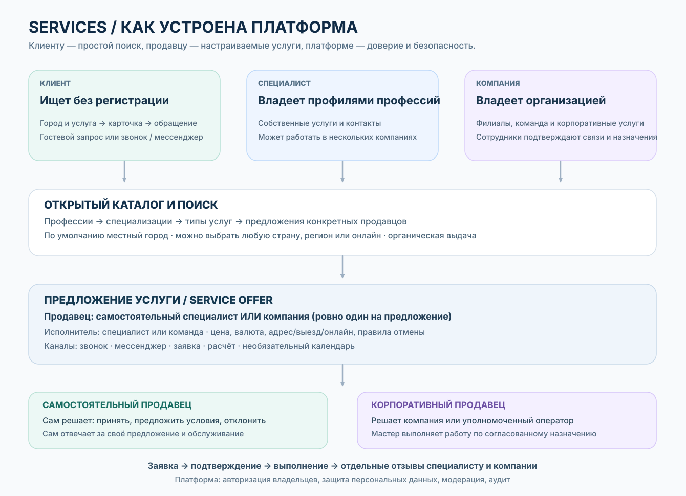
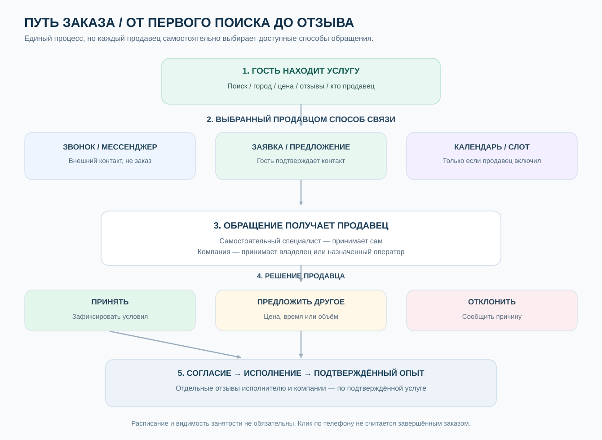
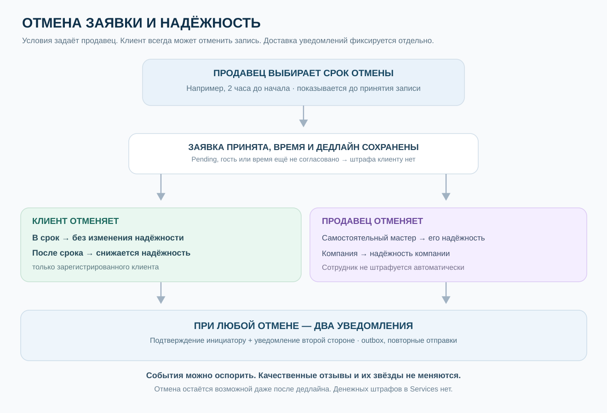
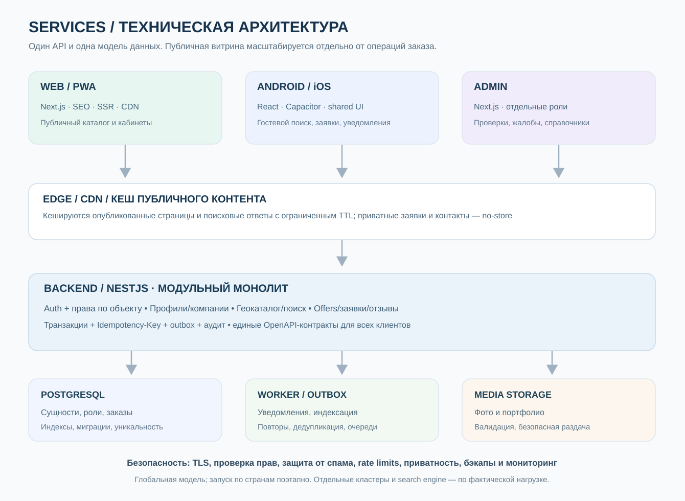

Платформа услуг,
где репутация принадлежит каждому.
Независимые страницы специалистов и компаний. Один человек — несколько профессий, но одна страница на профессию. Прозрачные связи, назначения на услуги, независимые отзывы и управляемый жизненный цикл.
Services — продукт, цель и полная картина
Что такое Services #
Services — глобальный открытый каталог услуг с приоритетом местного города/региона, где потребитель без регистрации находит нужную услугу или специалиста, а человек или организация публикует страницу и получает обращения. Платформа соединяет стороны, помогает сохранять контакты и может служить добровольным календарём занятости. Это не платёжный посредник, не площадка для торгов, не обязательная CRM и не система контроля стоимости.
Ценности:
- Клиент: быстро найти подходящую услугу и способ связаться, без обязательной регистрации и геолокации GPS.
- Специалист: постоянная профессиональная страница, портфолио и репутация независимо от работодателей.
- Компания: собственная витрина, филиалы, услуги, команда и управление обращениями от имени компании.
- Авторизованный клиент: избранное, подписки, собственная история и возможность более достоверных отзывов.
- Платформа: честный поиск и отдельные отзывы, ограниченная модерация, защита данных и прозрачная реклама.
Общая схема Services #

Редактируемая Mermaid-схема для ИИ · Техническая архитектура · Схема простых заявок.
Аудитория и возможности #
| Пользователь | Без входа / базовые действия | После входа / владеет |
|---|---|---|
| Гость | Поиск по городу/стране/онлайн, фильтры, карточки, портфолио, отзывы, разрешённые контакты, звонок и WhatsApp; простая гостевая заявка с проверкой контакта | Не имеет кабинета и чужих приватных данных |
| Авторизованный клиент | Всё, что гость | Закладки специалистов/компаний/услуг, подписки, собственная история заявок, удобное повторное обращение, отзывы по правилам проверки |
| Специалист | Публичная страница одной канонической профессии, несколько профессий у одного человека | Редактор личной страницы, предложения услуг, доступные каналы, заявки, календарь по желанию, связи с компаниями, разрешения на показ своего профиля, статистика |
| Компания | Публичная страница организации и филиалов | Компания, филиалы, предложения, команда, согласованные назначения специалистов, корпоративные версии их карточек, заявки, роли, статистика |
| Оператор/делегат | Нет полномочий без явного назначения | Только конкретные операции в конкретном контексте и филиалах |
| Администрация платформы | Доступ по отдельным ролям | Справочники профессий/услуг, модерация и жалобы, проверки, аудит, региональные ограничения, защита от мошенничества |
Один человек может одновременно выступать клиентом, специалистом нескольких профессий и владельцем компании; аккаунт общий, рабочие пространства раздельные.
Основной сценарий потребителя #
- Открывает сайт без регистрации. Выбранный ранее регион имеет приоритет; иначе сайт может предложить приблизительный город по сети, не требуя GPS. Переключение на другую страну, город или онлайн доступно всегда.
- Ищет по словам, категориям, профессиям, специализациям или конкретным услугам. Видит отдельно предложения специалистов и компаний, город/зону обслуживания и реальные отзывы.
- Открывает профиль или карточку услуги. Цена может быть фиксированной, ориентировочной, «от» или вовсе не указана; платформа не согласует сумму.
- Выбирает опубликованный продавцом канал: звонок, WhatsApp/мессенджер, простая заявка или свободное окно если продавец включил календарь.
- При заявке в Services вводит минимум данных (для гостя — подтверждение контакта), продавец сам принимает или отклоняет. Можно отменить; если стороны договорились вне платформы, продавец при желании вносит занятость вручную.
- После услуги клиент может сохранить страницу; авторизованный клиент при достаточном подтверждении оказания услуги оставляет отзыв. Нельзя считать клик WhatsApp заказом или визитом.
Самостоятельный специалист и компания #
У каждого ServiceOffer ровно один продавец/получатель заявки: независимый ProfessionalProfile или Organization. Исполнитель и продавец — разные роли, когда специалист оказывает корпоративную услугу.
| Откуда клиент нажимает «Обратиться» | Получатель заявки | Что видит клиент |
|---|---|---|
| Личная страница мастера, личное предложение | Мастер | Личное предложение и каналы мастера |
| Страница компании, её предложение | Компания/оператор | Название компании, филиал, услуга |
| Карточка мастера внутри страницы компании | Компания, мастер указан исполнителем | Корпоративное оформление и корпоративные каналы |
| Личная страница мастера → явная кнопка «Услуга в компании X» | Компания X после перехода в её контекст | Смена продавца показана явно |
Нельзя скрытно менять получателя заявки. Компания не становится владельцем личной страницы или клиентов мастера. Заявка по корпоративному предложению не переносится в личный кабинет мастера из-за его ухода из компании.
Одна профессиональная личность — несколько отображений #
Для каждой канонической профессии у человека один ProfessionalProfile, в том числе скрытый/архивный. Специалист может иметь несколько разных профессий; специализации и названия услуг не требуют новых профессиональных страниц.
- Личная страница: мастер управляет биографией, портфолио, личными контактами, самостоятельными услугами и настройками публикации.
- Карточка внутри компании: эта же профессиональная личность рендерится в дизайне компании. Мастер разрешает конкретные фото/поля для каждой компании отдельно; компания выбирает подмножество разрешённого и свои корпоративные сведения/услуги.
- Итоговое поле отображается только если мастер разрешил И компания выбрала И платформа допускает. Компания не может редактировать чужую профессиональную биографию, подменять рейтинг, подтверждения и оригинальные отзывы.
- При окончании Affiliation корпоративное представление скрывается, а личный профиль, подписчики и профессиональные отзывы остаются у мастера.
Гибкое расписание без принуждения #
Специалист может выделять время для разных контекстов: например, салон A пн–пт 09:00–18:00, самостоятельная работа 19:00–22:00, компания B по субботам. Корпоративные периоды согласуются обеими сторонами. Личное время принадлежит только специалисту.
Отдельно настраиваются способы связи и видимость занятости: скрыто, только занято/свободно или публичные свободные слоты. Публичного календаря может вообще не быть. Если в Services известны принятые пересекающиеся записи одного мастера, система не должна одновременно подтверждать конфликтующие окна. Другой компании можно сообщать лишь «недоступен», не раскрывая личный заказ. Записи по телефону не известны платформе, пока продавец не добавит их вручную.
Как понимать категории, профессии и услуги #
Это навигация для поиска, а не жёсткая иерархия и не несколько аккаунтов: «Красота» (категория) → «Парикмахер» (профессия) → «Колористика» (специализация) → «Окрашивание волос» (тип услуги) → конкретные предложения мастера и салона. У одной услуги может быть несколько подходящих профессий. Канонические коды, многоязычные синонимы и stable IDs поддерживаются платформой.
Отзывы, закладки и статистика #
Отзывы о мастере, компании и филиале — разные цели. Авторизация повышает доверие к автору, но сама по себе не доказывает факт оказанной услуги. Метка verified допустима только после достаточного подтверждения факта (метод до запуска утвердить отдельно). Нельзя купить или удалить правдивый негативный отзыв ради рекламы.
Аккаунт клиента даёт личное избранное, подписки и собственную историю. Продавцу показываются агрегированные просмотры страниц, клики контактов, полученные заявки, принятые и, отдельно, подтверждённые услуги. Количество уникальных авторизованных обратившихся клиентов можно считать при законных основаниях и дедупликации; оно не равно числу всех клиентов, особенно при гостевых/внешних обращениях. Личные списки избранного других людей продавцу не открываются.
Глобальная работа и локальный поиск #
Каталог работает глобально, но начальный поиск — выбранный город/регион. Приоритет: явный выбор устройства → сохранённый выбор аккаунта (если не конфликтует) → добровольная геолокация «Рядом со мной» → осторожная приблизительная сеть/IP → ручной выбор. Язык интерфейса не определяет физическую страну. Варианты: город, регион, страна, весь мир, онлайн. Если предложений мало, выдача явно предлагает расширение. Местные, выездные и онлайн-услуги различаются. Предложение действует в указанной зоне; нельзя изображать далёкого продавца как местного.
Монетизация и ограничения #
Бесплатная базовая органическая публикация страниц и предложений, платное продвижение позже с явной пометкой «Реклама». Платёжный посредник/эквайринг, тарифы и автоматическое ценообразование не входят в MVP. Глобальный охват не означает разрешения работать в любой стране или лицензируемой сфере: требования к персональным данным, рекламе, регулируемым категориям и защите потребителей проверяются по странам до включения соответствующих операций.
Техническая концепция и скорость #
| Часть | Роль |
|---|---|
services | Markdown как source of truth, HTML-сайт документации, ADR, схемы и OpenAPI |
services-front | Next.js для SEO/SSR/PWA, mobile React/Vite/Capacitor и общие UI/фичи/локализации |
services-back | NestJS modular monolith, PostgreSQL/Prisma, ACL, геопоиск, заявки, календари, уведомления |
services-admin | Отдельный Next.js для модерации, верификации, справочников и аудита |
| CDN и worker | Кеш только публичного, безопасные медиа, уведомления и пересчёт агрегатов без задержки запроса |
Одна бизнес-платформа не означает один тяжёлый экран или единый JS-bundle. Публичный поиск не загружает редактор страниц/календарь и не обращается к приватным кабинетам. Индексы, пагинация, lazy-loading, публичный кеш с инвалидацией и наблюдаемость нужны с начала; микросервисы — только по измеренным узким местам.
Где подробности и что ещё не утверждено #
- Организации, назначения, корпоративные представления
- Простая заявка, календарь, отзывы
- Безопасный конструктор
- Полные требования с ID
- Права доступа
- Границы состояний
- Архитектура и план разработки
- Открытые вопросы и решения до реализации
До начала предметной реализации нужно утвердить: факт выполнения для verified reviews; ограничения/уведомления при изменении и отмене времени; принадлежность и срок хранения гостевых контактов; пересечения корпоративных/личных смен; набор полей «мастер разрешает / компания выбирает»; авторизацию web/mobile; data residency/правовые условия по странам; финальный API, Prisma schema и тесты. Эти детали не должны возвращать Quote, обязательную цену и сложную коммерческую воронку.
Двусторонние отмены и надёжность — правило v0.7 #
Специалист либо компания самостоятельно устанавливают срок бесплатной отмены клиентом для своего предложения. Срок видно до записи; при принятии вместе с временем он фиксируется и не изменяется задним числом. До дедлайна зарегистрированный клиент отменяет без потери надёжности; позже дедлайна — снижается его отдельный показатель надёжности как клиента, а не рейтинг качества услуг. Компания/самостоятельный мастер, отменившие принятую заявку, получают соответствующее отрицательное событие к своей надёжности продавца; назначенный мастер компании не штрафуется автоматически.
Любая отмена направляет два уведомления: подтверждение инициатору и сообщение контрагенту, с учётом авторизованного или гостевого контакта. Отмена возможна даже после срока; никаких денежных штрафов или обязательной платёжной платформы. Не наказывать за свободный отзыв pending, не подтверждённое клиентом время, отмену в рамках срока, сбой сервиса, чужое изменение условий или подтверждённую уважительную причину. Участник видит причину влияния на рейтинг и имеет право оспорить. Рейтинги надёжности клиента и продавца отделены от отзывов о качестве. Полный расчёт, исключения, сохранение истории и транзакционные уведомления — ADR-0004.
Личные и профессиональные профили: жизненный цикл
Идентичности #
User — вход и безопасность; Person — внутреннее физическое лицо; PersonalProfile — публичная сводка, при желании; ProfessionalProfile — ровно одна страница данного Person на одну каноническую Profession. Пользователь выбирает видимые специализации внутри страницы, а не заводит отдельные страницы «мужской» и «женский» парикмахер.
DB-инвариант: unique(person_id, profession_id) для нестертых ProfessionalProfile, включая draft, hidden, archived и pending_deletion. Повторная команда создания возвращает существующую страницу с предложением продолжить, восстановить либо управлять ею. Удалённая окончательно идентичность не даёт права восстановить стёртые персональные данные; новую страницу можно создавать только по правилам повторной регистрации и антифрода.
Состояния присутствия #
| Статус | Найти в каталоге | Новые заявки | Можно редактировать | Можно восстановить |
|---|---|---|---|---|
| draft | Нет | Нет | Да | Не требуется |
| published | Да | Да, если предложение активно | Да, через редакции | Не требуется |
| paused | Да | Нет | Да | Да, снять паузу |
| hidden | Нет | Нет | Да | Да, опубликовать |
| archived | Нет | Нет | Да, ограниченно | Да |
| pending_deletion | Нет | Нет | Только отмена/экспорт согласно политике | Пока не истёк срок |
| erased | Нет | Нет | Нет | Нет |
Важно: статус профильной страницы и статус каждого ServiceOffer независимы. Пауза в записи не равна архивированию профессии. Блокировка модерацией — отдельный override с причиной, сроком и механизмом апелляции, а не самовольное изменение владельцем.
Переходы #
draft → published при выполнении минимальной комплектации; published ↔ paused; published ↔ hidden; published/paused/hidden → archived; archived → draft или published после повторной проверки обязательных сведений. Любое сохраняемое состояние → pending_deletion по проверенному запросу владельца (при наличии ограничений — отдельный юридический процесс). pending_deletion → предыдущее разрешённое состояние до срока; pending_deletion → erased по завершении проверки требований хранения/удаления.
Удаление и восстановление #
Для проекта предлагается 30-дневное окно отмены удаления как продуктовая гипотеза. Его точный срок фиксируется в утверждённой политике. После истечения выполняется каскадное удаление не обязательных персональных данных, отзывов с требуемым анонимизированием, сохранение отдельных финансовых/аудиторских фактов только по законным основаниям. Архивация никогда не удаляет отзывы.
Удаление аккаунта, профессиональной страницы, филиала и организации — разные операции. Активные заказы требуют обработки (завершение, отмена или переназначение с уведомлением) перед завершением жизненного цикла.
Редакции страниц #
PublishedRevision — неизменяемая опубликованная версия. DraftRevision — редактируемая рабочая версия с autosave, preview, draft conflict checks. При публикации создаётся новая revision, предыдущая остаётся для отката. Можно публиковать разделы поэтапно; откат не изменяет отзывы, назначения, записи, тарифы или юридические реквизиты задним числом.
Приватность #
Общий профиль может быть выключен, даже когда профессиональные страницы публичны. Клиент не видит скрытые профессии, приватные контакты и внутренние сведения. Нельзя незаметно объединять публичные страницы по общему телефону.
Критерии приёмки #
- Конкурирующие POST создания одной профессии дают один профиль, без гонок.
- Архивированная профессия не позволяет создать её дубликат.
- При восстановлении сохраняются собственные отзывы и подписки, если их законно сохранили.
- Удаление профессиональной страницы не уничтожает независимые отзывы о компании.
- Смена slug создаёт 301 redirect без потери стабильного ID.
- Публикация черновика не переписывает незавершённые/прошедшие заказы.
Организации, связи, услуги и ответственность
Организационная структура #
Organization — независимый профиль компании или бизнеса; OrganizationLocation — адресный филиал/площадка; TeamRole — права администрирования конкретного ресурса. Юридическая форма и публичная витрина могут различаться. Профиль специалиста нельзя «поглотить» компанией. Специалист может одновременно состоять в нескольких командах.
Affiliation — связь, но не назначение #
Подтверждённое сотрудничество ProfessionalProfile↔Organization с optional Location, видом отношений (сотрудник, подрядчик, арендатор, партнёр), началом/концом, состоянием pending/active/ended/disputed и публичностью. Термины не должны делать ложных юридических заявлений. Инициатор может быть любой стороной; активация требует согласия другой стороны; спорный статус подлежит модерации.
Компания не назначает человека на услугу только по факту Affiliation. Для этого нужен ServiceAssignment — согласование конкретного предложения услуги.
Услуги #
ServiceDefinition — классификатор («мужская стрижка»). ServiceOffer — конкретная коммерческая услуга с продавцом, местом, необязательной справочной ценой, статусом и выбранными продавцом методами связи/заявки. Она может принадлежать организации или независимому специалисту. ServiceAssignment связывает профессиональный профиль с offer/location, фиксирует согласие исполнителя и срок, но не передаёт ему коммерческие данные компании.
| Объект | Пример |
|---|---|
| ProfessionalProfile | Александр — парикмахер |
| Affiliation | Александр сотрудничает с Barber Studio |
| ServiceDefinition | Мужская стрижка |
| ServiceOffer | Стрижка в Barber Studio, 4 000 ₸, 45 минут |
| ServiceAssignment | Александр может выполнять этот offer в филиале №1 |
| Independent ServiceOffer | Александр работает самостоятельно за 3 500 ₸ |
Мастер может предлагать разные услуги и расписания у разных компаний и самостоятельно. На клиентской странице всегда понятен продавец/получатель заявки и исполнитель; цена и календарь отображаются только когда владелец их заполнил.
Как устроен универсальный каталог без сложностей для пользователя #
| Уровень | Пример | Зачем нужен |
|---|---|---|
| Category | Красота и уход | Объединяет направления поиска |
| Profession | Парикмахер | Одна профессиональная страница человеку на каноническую профессию |
| Specialization | Колористика | Не требует второго профиля: уточняет компетенцию |
| ServiceDefinition | Окрашивание волос | То, что реально ищет клиент |
| ServiceOffer | Окрашивание у Анны / в салоне X | Конкретный продавец, стоимость, место, контакты и режим заказа |
Это навигационные связи, а не единая жёсткая лестница. Один тип услуги может иметь связь с несколькими профессиями и специализациями; у каждой профессии может быть несколько специализаций. Нельзя создавать второй ProfessionalProfile только потому, что человек выбрал новую специализацию. Администратор поддерживает канонические профессии и синонимы на нескольких языках, чтобы поиск по обычной формулировке попадал в правильные услуги.
Контекстная страница мастера внутри компании — ADR-0003 #
Один ProfessionalProfile используется в двух визуальных контекстах:
- Личная страница принадлежит мастеру: самостоятельные услуги, контакты, независимые заявки, портфолио и календарь по его выбору.
- Внутри компании рендерится
CompanyProfessionalViewиз живых ссылок на тот же профиль + Affiliation + Location + ServiceAssignment. Компания задаёт дизайн своей страницы, порядок карточек, собственные услуги и корпоративные контакты. Это не копия профессионального профиля, не новый владелец и не отдельные отзывы мастера.
Каждая сторона независимо контролирует видимость: мастер разрешает использовать конкретные сведения/фотографии в данной компании; компания выбирает из разрешённого набора нужные блоки и своё оформление. Поле видно лишь при согласии мастера и выборе компании и разрешении платформы. Компания может добавить своё описание роли мастера, но не менять его профессиональные данные и отзывы. Отзыв и верификация являются платформенными данными. При прекращении связи встроенная карточка исчезает, личная страница сохраняется.
Приём заявки: внутри страницы компании, включая карточку мастера, заявка принадлежит компании, даже если мастер указан исполнителем. На личной странице — мастеру. Переход от одной стороны к другой требует явной кнопки/выбора контекста. Ни одна сторона не может скрытно переадресовать заявку. Ссылки на компании у мастера могут вести к их соответствующим контекстам.
Рабочее время: специалист может выделять разным компаниям и самостоятельной работе отдельные периоды (например, A 09–18, personal 19–22, B в субботу). Компания не может публиковать его личный график, а мастер не может самостоятельно менять корпоративные часы без согласования с компанией. Если используются слоты, доступность вычисляется как пересечение выделенных мастером часов, часов компании и отсутствия уже известной занятости. Частные детали других контекстов не раскрываются.
Процесс #
- Компания приглашает профессиональную страницу в команду или специалист подаёт заявку.
- Получатель проверяет условия и подтверждает Affiliation. Пока pending, публичной метки «работает здесь» нет.
- Компания назначает мастера на одну или несколько собственных ServiceOffer; мастер подтверждает, что компетентен и согласен.
- Клиент видит только активные/проверенные назначения для данного места и услуги.
- При завершении сотрудничества новые назначения деактивируются; уже существующие записи не удаляются: владелец заказа решает по правилам замены/возврата с уведомлением и согласием клиента на изменение исполнителя.
Ограничения #
Один человек может иметь несколько организаций и филиалов с разными ролями. Один Profile может обслуживать несколько locations. Поля offer (цена, продавец, отмена, налоги) меняются по версии; завершённые транзакции сохраняют snapshot. Рекомендации коллег и подтверждение места работы отличаются от клиентских отзывов.
Приёмка #
- Нельзя добавить работника без подтверждения; нельзя использовать истёкший offer.
- Назначение на «стрижку» не создаёт назначение на «окрашивание».
- Изменение цены не пересчитывает существующее подтверждённое бронирование.
- При выходе мастера из салона его профессиональные отзывы и подписчики остаются.
- Бывший работодатель сохраняет только собственные отзывы и законные операционные данные.
Простые заявки, занятость и отзывы
Схема: простой путь от контакта к выполнению #

Текстовая схема процесса доступна в Mermaid.
Что видит посетитель #
Клиент может без входа найти предложение, посмотреть описание услуги, опубликованную стоимость (если продавец её указал), портфолио и отзывы, а затем:
- Позвонить или написать в WhatsApp/мессенджер по опубликованному продавцом каналу. Это внешний контакт, не заказ внутри Services; платформа не утверждает, что услуга состоялась.
- Отправить заявку с минимальным описанием и необязательной желаемой датой; гость подтверждает контакт, но не обязан создавать постоянный аккаунт. Получатель видит заявку в своём кабинете.
- Выбрать свободное окно, только когда продавец самостоятельно включил публичный календарь. Возможен режим ручного подтверждения записи.
Не требуется: коммерческое предложение, торг, согласование стоимости, этапы переговоров, онлайн-оплата, обязательная публикация занятости. Клиент может обсудить любые условия вне платформы по телефону или WhatsApp.
Кто получает заявку — правило контекста #
| Откуда действие | Продавец / получатель | Кто может принять/отклонить |
|---|---|---|
| Личная страница специалиста / его личное предложение | Независимый специалист | Владелец профессиональной страницы (или делегат) |
| Страница компании / корпоративное предложение | Компания | Владелец или оператор с разрешением |
| Карточка специалиста внутри страницы компании | Компания и её услуга, мастер указан исполнителем | Компания/оператор; мастер только при переданном праве |
| Личная страница со ссылкой «Записаться в салоне X» | Компания X, если клиент явно выбрал её контекст | Компания X |
При отправке фиксируется source_context, seller_type, seller_id, offer_id, performer_profile_id?, location_id?. Сервер сверяет все поля с действующей связью и опубликованным предложением; клиент не может передать чужой seller_id. Контекст всегда виден рядом с кнопкой. Никакая заявка компании не становится личной заявкой мастера.
Настройки продавца для каждого предложения #
contact_methods: phone, whatsapp, external_link (только безопасные схемы URL), guest_request, booking_slot. Минимум один действующий канал связи. Выбор нескольких методов и их порядок — у продавца. availability_visibility: hidden, busy_only, free_slots. acceptance_mode: manual (MVP); instant_if_available — возможная будущая опция, не обязательная.
| Тип услуги | Пример поведения без усложнений |
|---|---|
| Парикмахер | Показать часы и свободные слоты либо получать заявки без публичного календаря |
| Ремонт телефона | Заявка с описанием или WhatsApp, без выбора времени |
| Репетитор | Заявка или календарь только на выделенные занятия |
| Строитель | Заявка/звонок, без цены и календаря, переговоры вне Services |
| Салон | Компания получает заявку, назначенный мастер выполняет, занятость может быть скрыта |
Стоимость — не управляемый платформой процесс согласования. Продавец сам решает, показывать ли фиксированную цену, «от», диапазон или «по запросу». Поля нужны только для честного информирования и фильтров, а не для переговоров.
Состояния простой заявки #
| Текущий статус | Действие | Новый статус |
|---|---|---|
| — | Гость (после подтверждения контакта) или клиент отправил | pending |
| pending | Продавец принимает | accepted |
| pending | Продавец отклоняет | declined |
| pending | Клиент отменяет | cancelled_by_customer |
| pending | Срок ожидания истёк, если включена политика | expired |
| accepted | Продавец отменяет | cancelled_by_provider |
| accepted | Клиент отменяет | cancelled_by_customer |
| accepted | Продавец отмечает выполненной | completed |
Если по телефону согласовали другое время, продавец меняет запись и календарную занятость с уведомлением клиента, если это возможно; предыдущие данные остаются в журнале. Это изменение записи, а не отдельный коммерческий workflow.
Повторный POST с тем же Idempotency-Key возвращает тот же результат; сервер не допускает двойного принятия и конфликта известных бронирований одного исполнителя. Отмена освобождает известную занятость, но не стирает историю.
Календарь и распределение рабочего времени #
Один мастер может иметь несколько независимых контекстов: салон A (например, 09:00–18:00), работа на себя (19:00–22:00), салон B (по субботам). Интервалы и исключения хранятся с timezone; компания и мастер согласуют время, выделенное этой компании. Никто не может показывать личные данные чужого контекста: при конфликте выводится только «недоступно», не место/продавец/клиент.
Важное ограничение: если запись состоялась по телефону и не внесена в календарь Services, платформа не может знать о ней. Специалист или компания могут вручную добавить занятой блок. Отсутствие календаря или его скрытие не блокирует приём заявок.
Подтверждение выполнения и отзывы #
accepted и даже отметка продавца completed не доказывают факт услуги. Для «подтверждённого опыта» нужна отдельная политика ServiceExperience (например, доказуемая привязка к заказу и подтверждение клиента). Публичные отзывы предпочтительно принимать от авторизованных пользователей; статус verified только после достаточного подтверждения опыта. Один визит может иметь независимую оценку специалиста и компании/филиала, без удвоения агрегатов.
При прямом WhatsApp-звонке нельзя автоматически считать клики заказами/клиентами/успешными визитами. Жалобы и обратная связь гостя могут проходить отдельную процедуру, не выдавая им недостоверную метку verified.
Проверки #
- Личная кнопка специалиста направляет запрос мастеру; та же карточка внутри компании направляет запрос в компанию.
- Продавец может оставить только телефон/WhatsApp, скрыть расписание и цену; публикация и каталог работают.
- Компания не может увидеть детали личного вечернего заказа мастера.
- Принятие, отмена и изменение времени корректно отражаются в собственной занятости без двойной записи.
- Гость может запросить услугу, но не видит чужие заявки; продавец сам принимает/отклоняет.
- Без авторизации/подтверждения выполнения невозможно присвоить недостоверную метку verified review.
Отмена, рейтинг надёжности и уведомления — принятое правило v0.7 #

Редактируемая Mermaid-схема отмен и надёжности.
Источник с полной логикой и примерами: ADR-0004.
Продавец самостоятельно задаёт по каждому ServiceOffer срок бесплатной отмены клиентом (варианты: до начала, 2/12/24/48 часов, произвольное значение в пределах продуктового диапазона). Правило показывается до отправки заявки и перед подтверждением записи. Дедлайн фиксируется при принятии заявки с конкретным согласованным временем и не переписывается задним числом. Для accepted без согласованного scheduled_start_at автоматически штрафовать клиента запрещено; pending всегда отменяется без штрафа.
| Кто отменяет | Когда | Изменение надёжности |
|---|---|---|
| Клиент с аккаунтом | Pending или accepted до дедлайна | Нет |
| Клиент с аккаунтом | Accepted после дедлайна | Снижается customer reliability, но не звёзды отзывов |
| Гость | Своя заявка | Нет постоянного рейтинга; уведомление по подтверждённому каналу |
| Самостоятельный специалист | Свою принятую запись с согласованным временем | Снижается его provider reliability, раньше 24 ч — меньший вес |
| Компания / оператор | Принятую компанией запись | Снижается provider reliability компании, а не личный показатель назначенного мастера |
| Любая сторона | Взаимная отмена, подтверждённая объективная исключительная причина, исправление ошибки или отмена из-за изменения другой стороной | Без автоматического отрицательного события после проверки |
| Клиент не пришёл | Подтверждённый no-show | Повышенный вес, но только после уведомления и возможности оспорить |
Отмена всегда доступна, даже если срок истёк; автоматической денежной санкции, отказа в доступе к каталогу и изменения звёзд за качество нет. Один accepted request не должен создавать дубли штрафов при retry. Если дата/время согласованы с клиентом только по телефону, но не подтверждены в Services, нельзя автоматически наказывать его на основании односторонней записи продавца.
Обязательное уведомление обеим сторонам: при любой отмене принятой заявки сервер сохраняет CancellationEvent, корректирует слот, создаёт две адресные записи NotificationIntent — инициатору (подтверждение) и контрагенту. Авторизованные получают in-app + допустимый канал, гость — на проверенный SMS/email. Факт отправки, повторные попытки и недоставка учитываются отдельно. Не обещать SMS/WhatsApp-доставку до подтверждения провайдера. Инициатор видит влияние на надёжность и может оспорить ошибочное событие.
Разделение показателей: надёжность клиента, надёжность самостоятельного мастера и надёжность компании считаются раздельно. Молодой аккаунт имеет «недостаточно данных», а не публичный идеальный рейтинг. Формула из ADR версионируется, учитывает историю за 180 дней, имеет апелляцию, не используется для автоматического блокирования пользователей. ReviewRating зависит от подтверждённого опыта услуги, а не количества отмен.
Конструктор страниц и отраслевые шаблоны
Принцип #
Не свободный HTML-редактор, а безопасные типизированные блоки, собираемые пользователем в страницы. Общие блоки: о себе, услуги, фото/видео, портфолио, FAQ, сертификаты, навыки, места работы, команда, филиалы. Отраслевые шаблоны подсказывают нужные поля: парикмахер — до/после и запись; повар — блюда и кейтеринг; механик — марки/диагностика; репетитор — предметы/формат обучения. Врач допускается лишь после правового и продуктового review.
Модель #
PageTemplate(id, applicable_professions, version, default_blocks, required_blocks); PageBlockInstance(id, type, schema_version, props, order, visibility); PageDraft(owner, base_revision, blocks, updated_at); PublishedRevision(snapshot, published_at, author_id).
В backend — JSON-schema валидация props каждого block type, лимиты размеров, допустимые медиатипы, санитизация строк, ACL. Frontend рендерит только зарегистрированные UI-компоненты. Нельзя исполнять пользовательские скрипты, вставлять опасный HTML/CSS или выдавать произвольные внешние iframe.
Два настраиваемых представления одного профессионального профиля — ADR-0003 #
У профиля специалиста два варианта отображения: независимая страница мастера и карточка/подстраница внутри конкретной компании. Это один ProfessionalProfile, одна история профессиональных отзывов и подтверждённых квалификаций; разные контексты UI и разные получатели заявок.
CompanyProfessionalView содержит organization_id, professional_profile_id, affiliation_id, location_id?, master_allowed_fields, company_selected_fields, company_content, display_order, revision. У каждой компании свои настройки. Для конкретного поля итоговая видимость = разрешено мастером AND выбрано компанией AND разрешено политикой платформы.
Мастер может скрыть для компании личные контакты, биографию, отдельные работы/фотографии, публикацию самостоятельного расписания, выбрать разные наборы разрешений для двух компаний. Компания определяет корпоративные фото, оформление, должность/публичную роль, услуги, филиал, кнопку обращения; не может изменять оригинальные сведения мастера и выдавать свои отзывы за профессиональные. Платформенные подтверждения и независимые рейтинги не редактируются ни одной стороной. При завершении Affiliation корпоративное представление деактивируется.
Системная CTA на личной странице → personal seller; внутри компании → organization seller. Не генерировать индексируемые дубли профессиональной страницы под чужим именем; адрес URL корпоративного представления — часть страницы компании с корректным canonical.
Календарь, видимость занятости и контактные кнопки настраиваются для каждой услуги/контекста отдельно. Публикация страницы не требует цены и свободных слотов. Только безопасные зарегистрированные блоки, версии и server-side проверка разрешений.
Редактирование #
Выбор профессии → шаблон → заполнение обязательных полей → предпросмотр мобайл/десктоп → публикация. Autosave с revision_token и защитой от конфликта; reorder drag-and-drop и альтернативные кнопки для accessibility. Изменения можно публиковать частично либо целиком, но контракт публикации транзакционный.
Нередактируемые платформенные блоки #
Рейтинг и подлинные отзывы, статус верификации, текущие подтверждённые связи, ответственность продавца, юридические уведомления и consent нельзя переопределить пользовательским блоком. Пользователь вправе выбирать порядок отдельных информационных секций, но не фальсифицировать подтверждения.
Приватность и SEO #
Поле/блок имеет видимость public/private/owner; у связанных сущностей своя авторизация. Публичные страницы SSR/индексируемые; draft/hidden/archived noindex. Медиаконтент оптимизируется по размеру, имеет alt, безопасный CDN и отдельные согласия на фото клиентов.
Приёмка #
- Черновик не виден публично до публикации.
- Публикация версии не меняет факты booking/review.
- Неразрешённый блок/поле отклоняется сервером.
- Страница читабельна с клавиатуры и на узких экранах.
- Вложенные медиа не раскрывают приватные файлы.
Безопасность, права, приватность, комплаенс
Модель доступа #
RBAC на роль + ABAC на ресурс и его текущее состояние. Действующий session user не означает права управлять всей организацией. Разрешения проверяются в backend по person/profile/organization/location/offer, включая nested resources. Делегирование: явные AccessGrant с scope, expiration, revocation, last_used.
| Роль | Примеры разрешений |
|---|---|
| Person owner | Управление своими профессиями, приватностью, запрос удаления |
| Organization owner | Управление организацией, администраторами, филиалами |
| Organization admin | Команда и предложения в выданном scope |
| Operator | Записи и расписание, но не финансовые/владельческие права |
| Moderator | Чтение ограниченного набора жалоб, решение согласно политике |
| Platform admin | Проверяемое управление справочниками, модераторами |
| Auditor | Чтение допустимых журналов без мутации |
Обязательная защита #
Пароли: сильная политика и безопасное хеширование; session rotation/revocation, CSRF для cookie flow, secure httponly same-site cookies, rate limits, проверка email/телефона, MFA для админов. Authorization unit/integration tests, deny-by-default для новых API и объектов, инвалидация кешей при изменении прав.
Все критичные операции с idempotency: create profile, accept affiliation, publish revision, confirm booking, create review. Отложенные задания и повторные webhook-события не должны дублировать последствия. Ограничения на upload, signed URLs, malware scanning как отдельный этап; запрет сохранения секретов в git и клиентском bundle.
Приватность #
Разделение PII и публичного профиля, Data minimization; opt-in маркетинговых уведомлений; право на доступ, исправление и удаление в применимых рамках; retention matrix для profile, review, audit, booking, invoices, backups. Экспорт данных и механизм апелляции. Работодатель не получает историю клиентов специалиста вне собственной услуги.
Казахстан #
До запуска юридически подтвердить применимые нормы о персональных данных, локализации баз, передаче данных, рекламе, правах потребителей, ИП/организации, регулируемых профессиях. Это не заключение юриста. Инфраструктура, резервные копии, мобильная телеметрия и сторонние SDK должны пройти data mapping до использования.
Верификация #
Чётко различать «контакт подтверждён», «профиль владельца подтверждён», «организация проверена», «квалификация проверена». Одна галочка на все утверждения недопустима. Не публиковать сканы паспортов/дипломов без необходимости. Связь с компанией подтверждается обеими сторонами.
Аудит #
События: permissions.changed, profile.published, affiliation.accepted/ended, service_assignment.changed, booking.transitioned, review.moderated, admin.action. Хранить actor, target, reason, timestamp, correlation_id и безопасные diff/snapshot без ненужных PII.
DoD #
No secrets in repository; backup/restore drill; abuse reporting; rate-limited public API; accessibility; privacy notices; documented incident response; tests for IDOR, role escalation, duplicate operations and authorization revocation.
Безопасность и международные правовые ограничения — проектные требования v0.5 #
Нельзя гарантировать законность платформы во всех странах только кодом или формулировкой «мы посредник». До запуска каждой юрисдикции требуется перечень применимых обязательств, юридическое заключение по модели продавца и проверка технических доказательств. Публичный просмотр глобален, но публикация, заказ, онлайн-платежи и регулируемые категории могут включаться по странам/типам услуги отдельно.
Проверяемые правовые источники и действия (не юридическое заключение) #
| Вопрос | Планируемое действие до production |
|---|---|
| Персональные данные в Казахстане | Закон «О персональных данных и их защите», ст. 12: учесть хранение данных в базах/цифровых объектах на территории РК, проверить размещение production БД, backups, media, logs, analytics и договоры с обработчиками; не считать зарубежный CDN безопасным местом для приватных данных. ИПС Әділет |
| Защита потребителей РК | Проверить статус площадки и продавца, раскрытие данных о продавце, цене, условиях, возврате/отмене, обработку обращений и обязанности электронной торговой площадки, если применимы. Закон РК |
| ЕС/ЕЭЗ и личные данные | GDPR может применяться к компании вне ЕС, если она целенаправленно предлагает услуги лицам в ЕС или отслеживает их поведение. Требуются правовая основа, права субъекта, обработчики, уведомления и трансграничные передачи. GDPR, ст. 3 |
| ЕС/ЕЭЗ и маркетплейс | Если сервис подпадает под DSA и позволяет потребителям заключать дистанционные договоры с traders, оценить требования traceability of traders, notice/action, прозрачность рекламы и обжалование модерации. DSA, ст. 30 |
| Регулируемые услуги | Для медицины, юридических, финансовых, образовательных и иных регулируемых категорий отдельно подтвердить требования к лицензиям, разрешениям, рекламе, профессиональным титулу/квалификации, информационной безопасности и ограничению географии. До проверки — категория отключена для публикации/приёма заказов в этой стране. |
| Налоги, возвраты и платежи | Прямые контакты и гостевые заявки сами по себе не означают, что Services получает деньги. Изменение на оплату через платформу требует отдельной модели платежей, расчётов, налогообложения, возвратов и документации договорных отношений. |
| Правдивость отзывов | Указывать реальный уровень проверки: авторизованность пользователя, проверенный контакт и подтверждённый факт услуги — разные вещи. Не продавать «проверенность», не подделывать отзывы, предоставить жалобу и апелляцию. |
Матрица privacy и data governance #
- Публичные поля предложения/салона разрешены самим владельцем, приватные сведения владельца и клиента не раскрываются в публичных DTO.
- Для гостя просить минимум данных для конкретного обращения, подтверждать контакт с ограничением попыток, использовать short-lived scoped capability вместо фиктивной полноценной учётной записи.
- Доступ к обращению — только продавец и явно делегированный оператор; оператор не получает клиентскую базу специалиста при изменении Affiliation.
- Session/access tokens защищены, доступ к файлам проверяется сервером, загрузки проходят MIME/content validation, malware scanning и приватное хранение до публикации. Настроить CSP и безопасный HTML renderer для конструктора, не принимать произвольные script/iframe.
- Точные координаты посетителя и IP-предположение о регионе — разные данные. GPS только по явному действию пользователя; не помещать GPS, OTP, гостевые токены и сообщения в логи/аналитику.
- Для всех категорий данных требуется retention matrix: цель, основание, доступ, место хранения, срок, удаление из primary DB/backups и юридические исключения.
- Admin доступ: MFA, least privilege, audit trails, инциденты, разделение обязанности модератора/владельца компании/системного администратора.
Launch gate #
До включения приема заказов в новой стране: правовой чек-лист по стране и услуге, указание продавца и субъектов обработки данных, approved Terms/Privacy/Refund/Content Policy, hosting+processor inventory, confirmed rights/contacts, security test evidence, процесс жалоб и инцидентов. Выход из gate только по явному решению владельца платформы после юридической проверки, а не по факту успешного CI.
Защита рейтингов надёжности и legal launch gates v0.7 #
Надёжность клиента и продавца — персональные/деловые поведенческие агрегаты, отличные от отзывов о качестве. Учитывать правовые основания, минимизацию, доступ, объяснимость событий, сроки хранения, исправление и право оспорить. Нельзя автоматически лишать человека доступа к базовому поиску/услугам только из-за алгоритмического показателя; любые значимые ограничения требуют человеческого рассмотрения и отдельного правового анализа.
Рейтинг клиента показывать прежде всего самому клиенту. Продавцу — ограниченный индикатор надёжности по текущей заявке при наличии правового основания, без истории других контрагентов; мало событий — «недостаточно данных». Публичную отрицательную метку для гостя не создавать. Отзывы о профессии не изменяются при отменах. Полная запись причины и версии дедлайна доступна субъекту и уполномоченному модератору; при оспаривании исключить недоказанные no-show из публичного агрегата. Контакты гостей и тексты споров не отправлять в публичный CDN/аналитику.
Казахстан: перед размещением production персональных данных проверить действующую редакцию ст. 12 Закона «О персональных данных и их защите», включая редакцию 2026 года про базу и/или цифровой объект на территории РК, а также локальные backups, media, telemetry и обработчиков. Официальный источник: https://adilet.zan.kz/rus/docs/Z1300000094 . ЕС: при наличии применимости GDPR отдельно изучить ст. 22 (влияющие на человека исключительно автоматизированные решения/профилирование), прозрачность, пересмотр человеком и право оспаривания: https://eur-lex.europa.eu/eli/reg/2016/679/oj/eng/ . Не утверждать, что один алгоритм одинаково законен во всех странах.
Для каждого рынка нужен юридический чек-лист условий отмены, прав клиента, работающих категорий, настройки транзакционных уведомлений и допустимых сроков хранения рейтинга/событий. Клиент может отменить всегда, дедлайн влияет только на отдельную надёжность, не является финансовым штрафом или изменением качества услуги.
Архитектура Backend API
Стек и границы #
NestJS + TypeScript, PostgreSQL + Prisma. Модульный монолит: единая схема и транзакции, чёткие module boundaries, без преждевременных микросервисов. Redis/queue, PostGIS, поисковый движок подключаются лишь после подтверждения нагрузки. Медиа — object storage с политиками доступа и ресайзингом.
Модули #
| Модуль | Ответственность | Владение данными |
|---|---|---|
| Identity | Логин, сессии, MFA, верификация контактов | User, Session |
| People | Person, общий публичный профиль, настройки | Person, PersonalProfile |
| Professions | Справочник, синонимы, специализации | Profession, Specialization |
| Profiles | ProfessionalProfile, lifecycle, revisions, blocks | ProfessionalProfile, ProfileRevision |
| Organizations | Компании, филиалы, роли | Organization, Location, Membership |
| Affiliations | Приглашения, профессиональные связи, разрыв | Affiliation, Invitation |
| Catalog | ServiceDefinition, offers, searchable read models | ServiceOffer |
| Assignment | Согласование исполнителей по предложениям | ServiceAssignment |
| Booking | Запросы, статусы, конфликт времени | Booking, BookingEvent |
| Experience | Подтверждение факта услуги | ServiceExperience |
| Reputation | Отзывы, жалобы на отзывы, агрегаты | Review, RatingAggregate |
| Social | Follow, Recommendation, notification preferences | Follow, Recommendation |
| Notifications | Inbox, email/push dispatch, templates | Notification, Delivery |
| Media | Проверка загрузки, авторизация объектов | MediaAsset |
| Moderation | Жалобы, решение, апелляции | Report, ModerationCase |
| Audit | Append-only events, correlation | AuditEvent |
Структура каждого модуля #
controllers (HTTP) → application services/use cases → domain entities/policies → repositories/adapters. Контроллеры не содержат бизнес-правил. Cross-module доступ через публичные application interfaces/events; не импортировать Prisma модели чужого модуля в произвольный код.
Транзакционная последовательность #
Пример accept affiliation: authentication → ACL конкретного invited profile → validate invitation pending/unexpired → transaction optimistic/row lock → create active Affiliation + consume invitation → append AuditEvent + OutboxEvent → commit → asynchronous notification. Повторный idempotency key возвращает прежний результат.
Целостность #
Уникальный индекс person_id + profession_id в БД. Уникальность follow(profile, follower). Review unique(service_experience_id, author_person_id, target_type, target_id). Affiliation unique active pair with explicit location/period rules. Foreign keys, state transition constraints, timestamps, soft-archive columns. Long-lived review targets используют неизменяемый ID, не slug.
Работа с событиями #
Transactional outbox для уведомлений и аналитических событий, worker с idempotent delivery, retry+backoff, DLQ и наблюдаемостью. До роста нагрузки можно использовать PostgreSQL queue/outbox, не вводя Redis по умолчанию.
Интеграции #
Провайдер SMS/email/push через adapter; внешние карты/геокодинг за interface. На MVP нет необходимости хранить деньги клиентов. Лимитировать внешние вызовы, поддерживать таймауты, circuit breaker при необходимости, отмену неактуальных запросов со стороны frontend.
Требования к тестам #
Unit для доменных политик, Postgres integration на реальные ограничения/транзакции, contract tests для OpenAPI, authorization/IDOR и нагрузочные smoke для поиска и booking. Нельзя полагаться только на mock Prisma в проверках гонок.
Развёртывание #
Separate API и worker processes, container-based deployment, environments dev/staging/prod, migrations перед rollout с обратной совместимостью, health endpoints, structured logs, tracing, metrics, alerts, backup/recovery with documented RPO/RTO targets.
Модель данных, API и контракты
Реляционная модель #
Person 1:N ProfessionalProfile; Profession 1:N ProfessionalProfile; unique(person_id, profession_id). Organization 1:N Location. ProfessionalProfile ↔ Organization через Affiliation, профессионал ↔ конкретное ServiceOffer через ServiceAssignment. Booking содержит offer_id, professional_profile_id и location_id как snapshot/foreign-key context. ServiceExperience связан с Booking, а Review адресуется immutable target_id и target_type.
Состояния #
Хранить enum/state машинно и явно валидировать переходы. Для архива/скрытия/удаления необходимо различать status, visibility, moderation_state и deletion_deadline — один status не должен пытаться выражать всё. PublishedRevision неизменяема, DraftRevision использует optimistic locking.
Первоначальные REST endpoints (примеры) #
| Метод | Путь | Назначение |
|---|---|---|
| POST | /v1/auth/register | Регистрация |
| GET | /v1/me | Аккаунт, доступные пространства |
| GET/POST | /v1/me/professional-profiles | Мои профессии / создать |
| PATCH | /v1/me/professional-profiles/:id | Редактировать черновик |
| POST | /v1/me/professional-profiles/:id/publish | Публикация редакции |
| POST | /v1/me/professional-profiles/:id/lifecycle | Переход состояния |
| GET | /v1/professionals/:slug | Публичная профессиональная страница |
| GET/POST | /v1/organizations | Публичный поиск / создание бизнеса |
| POST | /v1/organizations/:id/affiliation-invites | Приглашение |
| POST | /v1/affiliation-invites/:id/accept | Подтверждение приглашения |
| POST | /v1/service-offers/:id/assignments | Назначение исполнителя |
| POST | /v1/bookings | Создать заявку |
| POST | /v1/bookings/:id/transitions | Изменить состояние |
| POST | /v1/experiences/:id/reviews | Отзыв по подтверждённому опыту |
| POST | /v1/follows | Подписаться |
| GET | /v1/search | Каталог |
| GET | /v1/admin/reports | Жалобы с серверной проверкой admin ACL |
API должен возвращать consistent error shape: code, message, details, request_id; статус 409 для конфликтов уникальности, 422 для недопустимых бизнес-переходов, 403 для отсутствия прав, 404 если объект не следует раскрывать.
Пагинация/поиск #
Cursor pagination на больших коллекциях, whitelisted sort/filter, limit caps, normalization query, index по profession/location/status, full-text/trigram для русских/казахских названий и aliases. Клиент может найти услугу, мастера или компанию; рекламные позиции всегда помечаются и не подменяют рейтинговый порядок.
Контрактные события #
profile.published, profile.archived, affiliation.accepted/ended, assignment.activated/revoked, booking.requested/accepted/completed/cancelled, review.created/moderated, follow.created, deletion.requested. Event schema versioning для совместимости.
Схема публикации и связи #
Любые идентификаторы проверяются на принадлежность owner/role, включая дочерние ресурсы. Контроллер не доверяет profile_id, присланному клиентом, без проверки владельца.
Версионирование #
API /v1, additive first, deprecation window, backwards-compatible migrations. Отдельный OpenAPI артефакт — единственный источник DTO типов для клиентов. При расширении поля enum учитывать старые мобильные версии; Feature flags и fallback UI.
Нефункциональные ориентиры #
Для пилота гипотезы SLO: доступность 99.5%, p95 простых GET до 500 мс (без внешнего геокодинга), без потери подтверждённых заказов. Цели утверждаются после нагрузки и бюджета; это не гарантированная производительность.
Архитектура Frontend, PWA, Android и iOS
Цель #
Один дизайн-язык и переиспользуемые продуктовые модули, но два runtime приложения: SSR web и Capacitor mobile. WebView Capacitor не запускает сервер Next.js. Подход: pnpm monorepo внутри services-front.
Структура #
services-front/
apps/
web/ # Next.js: SEO public pages, SSR, PWA
mobile/ # React + Vite + Capacitor: Android / iOS
packages/
ui/ # Design tokens, accessible components
features/ # Profiles, services, bookings, reviews UI + state
api-client/ # Generated OpenAPI types, transport
auth/ # Session-aware abstraction, platform adapters
i18n/ # kk/ru, later en
config/ # Typed runtime flagsPublic web (SSR/SEO) #
Indexable professional, company, service, profession and city pages; canonical URLs, metadata, structured data only when verifiable, XML sitemap, robots policy. Draft/hidden/archived/disputed private pages noindex, prevent CDN caching of private content. Avoid duplicate SEO pages for identical profession aliases.
Mobile #
Capacitor packages independent static assets, talks to same HTTPS API. Features such as push, share sheet, camera/gallery, deep links, native permissions behind adapters. Login/callback/deep-link tested on real Android and iOS. Do not embed backend secrets in app. iOS builds require macOS/Xcode and Apple signing.
State strategy #
Server state via typed query cache with cancellation and dedupe; UI state local/feature-scoped. Avoid duplicate submit: disabled submit + server Idempotency-Key. Invalidate targeted cache after mutation; optimistic updates only for reversible actions, rollback on error. Abort obsolete search requests on query change.
Authentication #
Web: secure httpOnly cookies with CSRF protection as applicable. Mobile: app-specific token/session design with secure keychain/keystore, refresh rotation and explicit revoke. Do not put tokens into LocalStorage or URLs. The API must support both contexts with separate policy.
Workspaces #
Unified account shell with switches: customer, personal identity, barber profession, chef profession, organization A, organization B. Route guard and server-side ACL for each. Do not infer authorization from visible menu. Tabs and navigational hierarchy based on current workspace, not separate registrations.
UX #
Mobile-first, accessible buttons, minimal forms, clear empty/error/loading states, image compression, skeletons, search with filters. Key user flows: find service; inspect professional and company; select offer/location; request; manage upcoming appointment; rate separately; follow. Professional: create profession, edit draft, manage affiliations/assignments. Business: manage locations/offers/team.
PWA/offline #
App shell and explicitly safe public assets can cache. Private reviews, booking details, contact data and sessions should not be cached indiscriminately. Initially offline read-only status with retry on reconnect; no offline booking commitments unless separately designed for conflict resolution.
Performance and accessibility #
Responsive images, lazy-loading, code splitting, route-based chunking, Core Web Vitals monitoring, WCAG 2.2 AA design target, keyboard navigation, screen-reader labels, touch targets, low-end Android testing and reduced-motion support.
Platform test matrix #
Web Chromium/Firefox/WebKit, Android device emulator+real, iOS simulator+real, PWA install/update, deep-link cold/warm starts, camera permissions, offline/reconnect, push opt-in, sign-in, background resume, different locale/viewport.
Архитектура админ-панели
Разграничение #
Admin — внутренний интерфейс оператора платформы, не кабинет директора салона. Кабинет бизнеса реализуется в общем пользовательском frontend. Backend контролирует все администраторские права, UI только скрывает недоступное.
Модули кабинета #
| Раздел | Сценарии | Приоритет |
|---|---|---|
| Обзор | Состояние системы, обращения, активные проверки | MVP |
| Пользователи | Поиск, статус, аккуратная поддержка | MVP |
| Профессиональные профили | Проверка подделок, нарушений, подтверждений | MVP |
| Организации | Подтверждение владельца, филиалов, спорных связей | MVP |
| Жалобы и апелляции | Очередь, доказательства, сроки, решения | MVP |
| Отзывы | Проверка на спам, скрытие с причиной, апелляция | MVP |
| Справочник профессий | Канонический ID, локализации, категории, aliases | MVP |
| Шаблоны страниц | Типы блоков, versioning, ограничения | MVP |
| Аудит | Кто и почему менял критичные объекты | MVP |
| Тарифы / реклама | Правила, пакеты, рекламные места, отчётность | Позднее |
| Аналитика | Активность, конверсия, качество сервиса, выручка | Позднее |
Roles and least privilege #
SuperAdmin — строго ограниченный состав; ModerationLead — решение/апелляции; Moderator — назначенные кейсы; Support — помощь без доступа к секретам; TaxonomyEditor — справочники; Auditor — read-only. В том числе scope по действию и объекту. Чувствительные решения могут требовать second approval и MFA.
Workflow модерации #
Report created → triage → evidence requested/in_review → decision (approve content / hide / suspend / reject report) → user notification → appeal → final decision. Каждое решение с причиной, actor, timestamps и ссылкой на политику. Модератор не может удалить чей-то отзыв только по просьбе коммерческого клиента без основания.
Запреты #
Нельзя ручным редактированием повышать органический рейтинг, подменять автора отзыва, присоединять профессионала к компании без согласия, включать удалённый профиль без проверенного права, обходить consent/retention. Временная блокировка/ограничение — отдельный override со сроком и восстановлением.
Архитектура #
Next.js TypeScript; авторизация через backend; typed generated API client, серверные ограничения доступа, secure headers, no sensitive data in client logs, forced MFA, audit correlation. Доступ из ограниченной сети/allowlist по возможности. На production отдельный домен, отдельные сессии и мониторинг.
UX оператора #
Очередь с фильтрами, сравнение старого/нового состояния, видимая связь между review и service experience, подтверждённые основания, быстрые безопасные действия, объяснимые ошибки, история решений и возможность отката там, где допустимо.
Тесты #
Forbidden admin access из обычного аккаунта, deny-by-default для новых ролей, case-level permissions, attempt to self-approve, appeal tracking, reason required, no PII leak in export, audit event for each sensitive operation.
Инфраструктура, CI/CD, мониторинг и качество
Окружения #
Local, staging, production; независимые БД и ключи; конфигурация через validated env; secrets only in secret store, no secrets in git. Казахстанская data residency и трансграничные сервисы требуют правовой проверки. Нет прямого доступа frontend/admin к базе.
Поток разработки #
- Изменение правила фиксируется в docs с user story, инвариантом и тестовыми критериями.
- Контракт API меняется до реализации breaking behavior.
- Backend мигрирует БД безопасно (expand → deploy → contract), проходит DB/integration/security tests.
- Front/Admin импортируют сгенерированный типизированный клиент; мобильные версии требуют backward-compatible API.
- CI: format/lint → types → unit → integration → E2E/accessibility → security/dependency scan → build. Review и PR; main всегда собирается.
- Staging smoke на центральный сценарий; затем deployment и мониторинг.
Разработка в параллельных сессиях #
Изолированные feature-ветки, ownership модулей, не менять общие contracts без координации, маленькие PR, без самовольного merge. Документация не считается реализованной функциональностью. Общие правила в AGENTS.md каждого репозитория.
Наблюдаемость #
Structured logs с request_id и trace_id, error reporting без PII, health checks, saturation, latency, booking funnel metrics, очередь уведомлений, rate-limit alarms. Analytics events — только минимально необходимые, с consent и retention.
Backup / DR #
Encrypted DB backups and restore rehearsals, object storage lifecycle + versioning, documented retention, RPO/RTO targets, offsite copies subject to local data rules. План инцидентов с ролями, уведомлениями и постмортем.
Надёжность #
Backend разруливает конкурентные запросы, unique constraints, explicit transactions, idempotency tokens. На клиенте double-click prevention, abort stale requests, optimistic rollback, sensible retries with jitter. Для внешних каналов уведомления — eventual consistency и deduplicated outbox.
Контроль качества #
- Domain: one-profession-one-profile including archive.
- Privacy: no cross-organization customer leakage.
- Reviews: separate immutable targets, professional portability.
- Lifecycle: archive→restore, deletion processing, revisions.
- Bookings: duplicates, cancellations, reassignment.
- Admin: permission escalation, fake verification, audit.
- Performance: mobile LCP, search p95, image budgets.
- Mobile: deep links, orientation, safe areas, signing, permissions.
Выпуск #
Фичефлаги для категорий и новых полей; rollout постепенно; обратная совместимость для мобильных клиентов, которые обновляются медленно. Release checklist включает юридические тексты, accessibility, security, staging, backups, monitoring, store policies and incident response.
Решения, принятые правила и технические ограничения
Решение v0.7: пользовательская отмена, надёжность, остальная бизнес-логика #
Решение пользователя: продавец выставляет срок бесплатной отмены по offer; после нарушения срока зарегистрированному клиенту снижается его надёжность как клиента. Самостоятельному продавцу/компании при отмене принятой записи снижается надёжность продавца; компания, а не личный мастер, несёт корпоративное событие. Отмена любой заявки создаёт два уведомления — инициатору и второй стороне. Показатель качества услуг и отзывы при отмене автоматически не изменяются.
Я разрешил остальные вопросы OPEN-01..14 как проектные defaults в ADR-0004: подтверждённое оказание услуги, гостевой доступ, двустороннее управление корпоративной карточкой, часы между компаниями и личной работой, восстановление владения, смена работодателя, внешние каналы связи, приватность занятости, дубли, уведомления, модерация, безопасные медиа и учёт уникальных зарегистрированных клиентов. Таблица прежних OPEN-ID ниже остаётся для трассировки, но вопросы больше не требуют гадать об их базовом поведении.
Не решено автоматически и требует реальных действий: TECH-01..08 (финальный API/Prisma/UX и тесты), выбор хостинга и поставщиков, проверка страны/профессии/обработки персональных данных, договорные правила, измерения производительности, внешний юридический review и реальная проверка внедрения. Не обещать соответствие законам лишь из-за документации.
Границы автоматического рейтинга #
Отмена pending без штрафа; своевременная отмена клиента без штрафа; late accepted cancellation клиента влияет только на customer reliability при известном и показанном сроке; provider cancel влияет на надёжность продавца, но не автоматически работника компании; гостю не создаётся история штрафов для будущего аккаунта; no-show — после проверки и оспаривания. Срок отмены фиксируется snapshot и не переписывается при смене настроек. Уведомления создаются двум сторонам независимо от штрафа. Честный рейтинг отдельно от отзывов; пользователь может спорить и видеть причину. Ценообразование/Quote вне Services.
Как читать этот документ #
ACCEPTED — прямое продуктовое решение владельца. PROPOSED — рекомендованный вариант, требует проверки бизнес-правил и тестов. DESIGNED — проектное решение выбрано в ADR-0004, предстоит реализовать и проверить. LAUNCH-GATE — обязательная внешняя/техническая проверка до выпуска; решить только текстом невозможно. DEFERRED — после MVP; проектировать точку расширения, но не реализовывать сейчас.
При конфликте старых набросков и принятого решения: ADR-0003 — простые заявки и корпоративные представления, ADR-0002 — география, ADR-0001 — границы приложений имеют приоритет над устаревшим draft-текстом. Перед реализацией по задаче агент обязан убедиться в отсутствии противоречий на уровне API/schema/тестов.
Утверждённые решения #
| ID | Статус | Решение и следствие |
|---|---|---|
| DEC-01 | ACCEPTED | Глобальный открытый каталог; поиск, страницы и опубликованные контакты без регистрации |
| DEC-02 | ACCEPTED | По умолчанию локальный город/регион, ручной выбор выше IP/GPS, другой город/страна/мир/онлайн доступны всегда |
| DEC-03 | ACCEPTED | Один Person имеет максимум один ProfessionalProfile на каждую каноническую Profession; специализации не создают новые профили |
| DEC-04 | ACCEPTED | Компания и профессионал независимы, отзывы и подписчики мастера остаются у него при смене места работы |
| DEC-05 | ACCEPTED | Двусторонне подтверждаемая связь с компанией отдельно от назначения специалиста на корпоративную услугу |
| DEC-06 | ACCEPTED | Заявка с личной страницы адресуется мастеру; с компании/мастера внутри компании — компании, с явно видимым получателем |
| DEC-07 | ACCEPTED | Простая заявка: pending → accepted/declined → completed/cancelled; не вводить Quote, торги, контроль цены |
| DEC-08 | ACCEPTED | Владелец услуги сам выбирает телефон/WhatsApp, гостевую заявку и/или добровольный календарь; цена и занятость необязательны |
| DEC-09 | ACCEPTED | Один ProfessionalProfile имеет личную страницу и компания-специфичные представления; отображение = allowlist мастера ∩ выбор компании ∩ платформа |
| DEC-10 | ACCEPTED | Периоды работы на компанию и на себя могут различаться по времени/дню; не раскрывать подробности чужой занятости |
| DEC-11 | ACCEPTED | Зарегистрированный клиент сохраняет страницы, подписывается, видит свои заявки/историю; публичные действия остаются доступны гостю |
| DEC-12 | ACCEPTED | Статистика различает просмотры, клики контактов, заявки, принятые, подтверждённые посещения и уникальных авторизованных клиентов; клики не равны заказам |
| DEC-13 | ACCEPTED | Платформа и продавец имеют отдельные права; paid promotion маркируется, не изменяет органическую репутацию |
| DEC-14 | ACCEPTED | Web SSR/PWA, Capacitor mobile, NestJS/Postgres modular monolith, отдельная Admin и общий контракт API; HTML строится из MD |
P0 — проектные defaults по ранее открытым OPEN-01..14 #
Ниже сохранены прежние ID для связей с планом, но базовые варианты выбраны ADR-0004. Исполнение, юридическая проверка и тестирование ещё впереди.
| ID | Вопрос | Выбранный проектный default (подробности в ADR-0004) | Приоритет / блокирует |
|---|---|---|---|
| OPEN-01 | Какие доказательства дают метку «услуга подтверждена» и право verified review? | Отзыв — от авторизованного клиента; verified только после проверяемого ServiceExperience и защиты от самоподтверждения продавцом | Критично: отзывы |
| OPEN-02 | Что считать отменой/изменением времени и какие уведомления обязательны? | Оба участника могут отменить своё участие; менять время может продавец после внешней договорённости; event log + отправка уведомления по выбранному каналу | Критично: заявки |
| OPEN-03 | Как защищать гостевой запрос и выдавать доступ к его статусу? | OTP на контакт, лимиты, scoped токен только одной заявки, TTL/consent/удаление; без фиктивного User | Критично: guest flow |
| OPEN-04 | Сколько свободы дать компании и мастеру в embedded view? | Типизированный allowlist полей, запрет копирования скрытого контента, ревизии с отменой доступа при отзыве Affiliation | Критично: page builder/ACL |
| OPEN-05 | Как согласовывать рабочие часы и решать пересечения разных компаний? | Allocation подтверждают мастер и компания; прямой запрещённый overlap для bookable slots; private busy-only за пределами scope | Критично: календарь |
| OPEN-06 | Какая модель подтверждения владения профессиональной страницей, компанией и возврата доступа? | Контакт ≠ реальная компания/лицензия; claim + manual/automated verification по стране, scoped transfers, журнал доказательств | Критично: идентичности |
| OPEN-07 | Что делать с заказами при увольнении мастера/закрытии филиала/архивировании предложения? | Не удалять историю и активные заявки; продавец и клиенты получают уведомления; новый исполнитель в корпоративном контексте только по видимому правилу | Критично: lifecycle |
| OPEN-08 | Нужен ли разрешённый внешний канал как единственный способ контакта? | Да; телефон/WhatsApp без in-platform заявки допустим, поэтому статистика заказов может быть неполной; минимум один рабочий канал | Критично: offers (рекомендуется утвердить) |
| OPEN-09 | Какие значения статуса занятости видит клиент без календаря? | hidden/busy-only/free-slots; не показывать подробности и не обещать точность, когда продавец ведёт запись вне платформы | Критично: availability |
| OPEN-10 | Как предотвращать дубли аккаунтов, профессий и захват чужого профиля? | DB unique per canonical profession, защищённое объединение аккаунтов только при подтверждении обеих сторон, запрет автоматического переноса отзывов | Критично: identity |
| OPEN-11 | Какой режим уведомлений и предпочтений для гостей/клиентов/продавцов? | In-app продавцам, email/SMS по обоснованному событию и согласию; push позже; недоставка уведомления не отменяет принятую заявку | Высокий: notifications |
| OPEN-12 | Какие категории и страны реально допускаются к публикации/приёму заявок? | Глобальная схема и поиск, но country/category launch flags, проверка закона, лицензий, Privacy/Terms и места хранения перед активацией | Критично: launch |
| OPEN-13 | Как обрабатывать фото клиентов/портфолио, жалобы и отзыв публикации в компании? | Согласие на публикацию, безопасный upload и модерация; master allowlist revocation инвалидирует кеш у компании | Высокий: media |
| OPEN-14 | Как измерять «уникального клиента», не раскрывая его идентичность третьим лицам? | Только уникальные ID авторизованных заявителей; агрегаты с ограничениями малых выборок; без списка сохранений/личных клиентов других продавцов | Критично: analytics/privacy |
P0 — технические решения, необходимые до кодирования бизнес-функций #
| ID | Что должно быть утверждено | Проверяемый артефакт |
|---|---|---|
| TECH-01 | Единая модель ServiceRequest вместо разошедшихся названий Booking/Inquiry в старых главах | Prisma schema + OpenAPI + диаграмма переходов + tests |
| TECH-02 | Семантика seller, source_context, performer, affiliation, assignment, company_view | ER-схема с FK/unique/check + негативные ACL/IDOR тесты |
| TECH-03 | Полные контракты на search, guest OTP, request lifecycle, company view permissions, allocation и saved items | Валидный OpenAPI 3.1 с request/response/errors, generated typed clients |
| TECH-04 | Аутентификация web/mobile/admin, сессии, CSRF, refresh, безопасный доступ гостя | Security ADR, threat model, token/session rotation tests |
| TECH-05 | Многоязычность и глобальная география + зона обслуживания + timezone/currency | Taxonomy + seed + geo IDs + локализация kk/ru, архитектура для других языков |
| TECH-06 | Политика публичного кеширования, версия витрин, инвалидация после удаления/изменения разрешений | Cache matrix, no-store private, SSR/SEO regression, privacy tests |
| TECH-07 | Данные по странам и безопасность реального deployment | DPA/consent/retention/backup/hosting inventory, legal sign-off, incident runbook |
| TECH-08 | Подготовка CI/CD и тестов на параллельные запросы, отмены и время | Protected workflows, staging, DB integration, E2E, mobile smoke |
P1/P2 — не блокируют MVP #
- DEFERRED: платежи, договоры и коммерческие споры о цене, любые
Quote/переговоры и финансовый арбитраж платформы. - DEFERRED: сложные групповые заказы, этапы ремонта, автоматическое переназначение исполнителей, продвинутый CRM и интеграции бухгалтерии.
- DEFERRED: сложные пересечения ресурсов/комнат/оборудования, интеграция сторонних календарей и auto-confirm вне простого режима.
- DEFERRED: рекламный кабинет, Pro/Business тарифы, скидки, лояльность, рекомендации и глобальные платёжные операции.
- DEFERRED: микросервисы, собственный search engine или многорегиональная репликация без реальных метрик.
Этапы принятия решений #
- Domain sign-off: проектные варианты OPEN-01..14 закрыты ADR-0004; проверить полноту сценариев, исключения, уведомления и права в контрактах и тестах.
- UX sign-off: главная/регион/каталог, личная страница и corporate view, гость → заявка, две стороны управления видимостью, личный и корпоративный календарь, клиентское избранное.
- Technical sign-off: TECH-01..08, OpenAPI/DB/ADR, threat model, тесты, критерии миграции и развёртывания.
- Pilot sign-off: конкретные страна/город/категории, юридическая проверка регулируемых услуг и данных, реалистичные KPI и процесс поддержки.
Готовность нельзя измерять количеством Markdown-файлов. Отмечать ACCEPTED только принятое решение, READY только контракт с отрицательными сценариями и тестами, DONE только реализацию с CI/QA evidence.
Полный функциональный каталог и границы релизов
Как читать требования #
Каждое требование имеет стабильный ID; у него есть актор, разрешение, действие, результат, исключения и приёмка. ID используется в задачах трёх прикладных репозиториев, тестах, API и релизных отчётах. Изменение требований проходит через ADR, ревью и обновление всех затронутых контрактов.
| ID | Модуль | Возможность | Приоритет | Главный пользователь |
|---|---|---|---|---|
| ID-01 | Учётная запись | Регистрация, вход, восстановление, подтверждение контакта, выход со всех устройств | P0 | Все |
| ID-02 | Личность | Единый Person и необязательный публичный PersonalProfile | P0 | Человек |
| ID-03 | Роли | Переключение клиент / профессия / компания без повторного входа | P0 | Все |
| PR-01 | Профессии | Одна профессиональная страница на одну каноническую профессию | P0 | Специалист |
| PR-02 | Профиль | Черновик, публикация, скрытие, пауза, архив, восстановление | P0 | Специалист |
| PR-03 | Удаление | Запрос удаления, отмена, стирание/сохранение по закону | P0 | Все владельцы |
| PR-04 | Конструктор | Типизированные блоки, шаблон по профессии, предпросмотр, версии | P0 | Специалист |
| PR-05 | Медиа | Фото, портфолио, согласия, безопасная загрузка | P0 | Специалист / компания |
| PR-06 | Квалификации | Поля квалификации и отдельный статус проверки | P0 базово, P1 расширено | Специалист |
| OR-01 | Компания | Создание и управление независимой публичной страницей | P0 | Владелец |
| OR-02 | Филиалы | Адреса, графики, активность, отдельные отзывы | P0 | Компания |
| OR-03 | Сотрудники | Двусторонние приглашения/согласие/завершение | P0 | Компания / специалист |
| OR-04 | Роли компании | Владелец, администратор, оператор; приглашение/отзыв доступа | P0 | Компания |
| SV-01 | Каталог | Канонические профессии, категории и специализации | P0 | Платформа |
| SV-02 | Предложения | Услуга, цена/диапазон, длительность, место, продавец, правила | P0 | Специалист / компания |
| SV-03 | Назначения | Согласие специалиста выполнять выбранные услуги компании | P0 | Специалист / компания |
| SV-04 | Состояния | Включить/отключить услугу и назначение без уничтожения истории | P0 | Исполнитель |
| DS-01 | Поиск | Поиск по услуге, человеку и организации, фильтр города | P0 | Клиент |
| DS-02 | Сравнение | Результаты с явным типом профиля, рейтингом, условиями | P0 | Клиент |
| DS-03 | География | Карта, расстояния, расширенные фильтры | P1 | Клиент |
| BK-01 | Заявки | Отправить, принять, отклонить, отменить, завершить | P0 | Клиент / исполнитель |
| BK-02 | Согласие | Снимок цены и условий на момент принятия; существенные изменения требуют согласия | P0 | Клиент |
| BK-03 | Слоты | Полный календарь, занятость, синхронизация рабочих мест | P1 | Исполнитель |
| RV-01 | Отзывы | Раздельная оценка специалиста и организации по подтверждённому визиту | P0 | Клиент |
| RV-02 | Модерация | Жалоба, скрытие с причиной, апелляция, история | P0 | Все / модератор |
| RV-03 | Рекомендации | Явно отличающиеся от отзывов советы друзей/профессионалов | P1 | Клиент / специалист |
| SO-01 | Подписки | На профессию, компанию, филиал и при желании общего человека | P0 | Клиент |
| SO-02 | Избранное | Списки сохранённых специалистов, компаний и услуг | P0 | Клиент |
| NT-01 | Уведомления | Внутренние события заявок, приглашений и обновления места работы | P0 | Все |
| NT-02 | Каналы | Email / push / SMS по согласию и настройке | P1 | Все |
| MN-01 | Безопасность | Базовая модерация, аудит, ограничения и жалобы | P0 | Платформа |
| MN-02 | Проверки | Отдельное подтверждение контакта, компании, квалификации | P0/1 | Платформа |
| AN-01 | Статистика | Базовая история заявок и просмотров у владельцев | P0 минимально | Специалист/компания |
| AN-02 | Аналитика | Повторные визиты, конверсии, дашборды | P1 | Бизнес |
| CM-01 | Лояльность | Накопительные бонусы и персональные промокоды | P1 | Бизнес / клиент |
| CM-02 | Реклама | Маркированные спонсируемые места, прозрачная атрибуция | P2 | Бизнес / платформа |
| CM-03 | Тарифы | Free, Pro, Business, enterprise-функции | P2 | Бизнес / платформа |
| CH-01 | Коммуникации | Встроенные переписки и файлы с ограничениями | P1/2 | Все |
| PY-01 | Платежи | Онлайн-оплата, возвраты, расчёты | P2, отдельный проект | Все |
Основные правила для всех модулей #
- На UI действия недоступны, пока нет прав, но backend проверяет каждую операцию заново.
- Пустое состояние содержит полезное действие, ошибка объясняет причину и способ исправления без утечки PII.
- Разрушительные действия требуют явного подтверждения и показывают последствия для заявок и связей.
- Создание/подтверждение идемпотентно; двойной клик не создаёт дубликат.
- Публичные страницы доступны без регистрации, приватные данные нет.
- На телефоне все сценарии осуществимы без горизонтальной прокрутки, длинных мастеров настройки и мелких кнопок.
Критерий MVP #
Не просто наличие страниц: реальный сценарий компания→филиал→услуга→приглашение→назначение→поиск→заявка→визит→два отзыва→смена работы проходит end-to-end и в защищённом API, и на мобильном интерфейсе. P1/P2 не блокируют пилот.
Дополнение v0.3 — открытый маркетплейс без обязательной регистрации (2026-11-01) #
Утверждённый продуктовый принцип: главный потребительский сценарий работает без создания аккаунта. Аккаунт нужен для владения профессиональными/корпоративными страницами и персональных возможностей, а не как входной барьер к каталогу.
| ID | Возможность | Приоритет | Правило / результат |
|---|---|---|---|
| GS-01 | Открытый каталог | P0 | Главная, категории, поиск, фильтры, публичные карточки и карточки услуг доступны анонимно |
| GS-02 | Открытые контакты и связь | P0 | Просмотр опубликованных адреса/расписания/контактов, переход к звонку или мессенджеру без входа; владелец управляет публичностью |
| GS-03 | Гостевое обращение | P0 | Гость может отправить запрос без создания постоянного аккаунта; подтверждает контакт кодом и получает безопасный способ проверять/отменять свой запрос |
| GS-04 | Авторизация по полезности | P0 | Вход предлагается для подписок, синхронизации избранного, истории и ведения профилей; доступ к поиску не блокируется |
| GS-05 | Защита гостевых действий | P0 | Rate limiting, антибот-защита с минимальным трением, контактный OTP, expirations, consent и запрет утечки заявок |
| PRM-01 | Самостоятельная публикация предложений | P0 | Специалист/компания регистрируется, подтверждает право владения страницей, создаёт профили и предложения услуг |
| PRM-02 | Органическая видимость | P0 | Публичные активные предложения индексируются и находятся в поиске без покупки платного тарифа |
| PRM-03 | Платное продвижение | P2 | Выделение, реклама/промопозиции, маркированные Реклама/Спонсировано, прозрачные правила и отчётность |
| PRM-04 | Репутационные ограничения рекламы | P0 | Никакой тариф не изменяет подлинные отзывы, проверку квалификации или органический рейтинг |
Правило MVP: бесплатное публичное обнаружение услуг и хотя бы один рабочий способ обратиться к исполнителю без регистрации. Гостевой запрос — отдельная серверная сущность/режим, не фиктивный зарегистрированный клиент. Для жалоб, отзывов и действий с повышенным риском действуют свои критерии подтверждения личности и визита.
Дизайн конверсии: показывать выгоду создания аккаунта только после успешного взаимодействия («Сохранить мастера», «Следить за заявками»), а не вместо ответа на запрос. Не требовать разрешения на геолокацию для текстового выбора города. Не скрывать телефоны/цены за логином и не показывать неопубликованные частные контакты.
Статусы исполнения: это спецификация, пока не реализовано в сервисных приложениях.
Дополнение v0.4 — международный каталог и умный выбор региона #
| ID | Возможность | Приоритет | Приёмка |
|---|---|---|---|
| GEO-01 | Глобальный географический охват | P0 | Структура страны/региона/города не ограничивает платформу Казахстаном; можно вручную перейти в любой доступный город |
| GEO-02 | Местная выдача по умолчанию | P0 | Поиск сначала учитывает выбранный/предполагаемый регион и не показывает другую страну как локальную |
| GEO-03 | Ручной выбор региона | P0 | Переключатель страна → регион → город доступен без регистрации и на мобильном; есть поиск по названию |
| GEO-04 | Запоминание выбора | P0 | Явный выбор сохраняется на устройстве; после входа может синхронизироваться с аккаунтом; IP и язык не перетирают его |
| GEO-05 | Уточнение без обязательной геолокации | P0 | GPS не запрашивается при открытии; «Рядом со мной» включается отдельно и добровольно |
| GEO-06 | Недостаток предложений | P0 | Пустая выдача предлагает соседние города, весь регион, страну или онлайн; смена зоны всегда понятна |
| GEO-07 | Международные услуги | P0 базовая модель, P1 сложные сценарии | Местные, выездные, в зоне обслуживания, удалённые/онлайн предложения различаются |
| GEO-08 | Валюта, язык и часовой пояс | P0 модель, P1 расширенный UX | Цена хранится в исходной валюте предложения; язык, страна поиска и валюта независимы; время указывается в timezone услуги |
| GEO-09 | SEO регионов | P0 | Индексируемые канонические страницы нужных стран/городов; не плодить пустые/дублирующиеся фильтры |
| GEO-10 | Границы запуска и правила регионов | P0 | Архитектура глобальная, а публикуемые категории/способы оформления зависят от доступности, законов и фичефлагов страны |
Принцип: предполагаемый регион — мягкое значение по умолчанию, а не ограничение доступа. Нельзя подменять явный выбор клиента геолокацией по IP. Глобальную монетизацию, расчёт налогов, платежи и юридические ограничения вводить по странам отдельно.
Решения v0.5 — простые заявки, две версии страницы, занятость и закладки #
ADR-0003 отменяет коммерческие переговоры, обязательную цену и сложную машину согласования условий для MVP.
| ID | Функция | Приоритет | Приёмка |
|---|---|---|---|
| IN-01 | Простая заявка | P0 | Гость или клиент отправляет, продавец принимает либо отклоняет; согласование суммы вне платформы |
| IN-02 | Прямая связь | P0 | Владелец может оставить только звонок / WhatsApp; клик не считается заказом |
| IN-03 | Контекст получателя | P0 | Личная страница → мастер, страница компании/мастер внутри компании → компания |
| IN-04 | Отмена и ручная занятость | P0 | Продавец отменяет принятую запись или вручную помечает время занятым после внешнего контакта |
| VIEW-01 | Личная профессиональная страница | P0 | Самостоятельные сведения, предложения, контакты, календарь и независимая репутация |
| VIEW-02 | Мастер внутри компании | P0 | Одна исходная профессиональная страница, но корпоративный UI и корпоративные предложения/заявки |
| VIEW-03 | Двусторонние настройки видимости | P0 | Мастер даёт разрешения по полям компании; компания выбирает их подмножество и своё оформление |
| CAL-01 | Добровольный календарь | P0 | Можно скрыть, показать только занятость либо открыть свободные слоты |
| CAL-02 | Разделение времени по контекстам | P0 | Дневная работа на компанию и вечерняя на себя; защита известных конфликтов без раскрытия чужих заявок |
| REG-01 | Кабинет клиента с закладками | P0 | Авторизованный клиент сохраняет специалистов, компании и услуги; просмотр каталога остаётся анонимным |
| AN-03 | Честная статистика пользователей услуг | P0 база, P1 отчёты | Различать просмотры/контакты/заявки/принятые/подтверждённые/уникальных авторизованных клиентов |
| IN-05 | Необязательная справочная стоимость | P0 | Цена/диапазон/по запросу не запускают процесс согласования, а могут отсутствовать |
Уточнение прежних пунктов: BK-02 означает фиксацию продавца, даты/слота при наличии и публичных деталей заказа, а не обязательное согласование цены; BK-03 (полный календарь) P1, но базовая добровольная занятость CAL-01 и ручные блоки IN-04 входят в MVP. Разделы Quote, коммерческие этапы и онлайн-платежи не входят в текущую версию.
Решения v0.7 — отмены, справедливая надёжность и события #
| ID | Возможность | Приоритет | Требование |
|---|---|---|---|
| CAN-01 | Срок отмены продавцом | P0 | Индивидуальное правило для offer, явно показано и snapshot на accepted + scheduled time |
| CAN-02 | Отмена обеими сторонами | P0 | Клиент, самостоятельный продавец или уполномоченный оператор компании; включая pending без штрафа |
| CAN-03 | Нейтральная отмена в срок | P0 | До дедлайна у клиента не ухудшается надёжность; если нет согласованного времени, нет автоматической просрочки |
| CAN-04 | Отрицательное событие клиента | P0 | Только у авторизованного клиента за позднюю отмену принятой записи; подлежащие проверке исключения |
| CAN-05 | Отрицательное событие продавца | P0 | При отмене accepted ответственность у фактического seller — независимого специалиста ИЛИ компании, не автоматически у работника |
| CAN-06 | Уведомить обе стороны | P0 | Два NotificationIntent при отмене любой заявки, со статусами и retry/outbox |
| CAN-07 | Исправление и спор | P0 | Причина, аудит, право оспаривания, подавление ложных/no-show событий и повторных штрафов |
| REL-01 | Раздельная надёжность | P0 | Customer reliability и seller reliability отдельно от качества услуг и друг от друга |
| REL-02 | Прозрачный расчёт | P0 | Версионированная, ограниченная по времени формула, недостаточно данных у новичка, никакой автоматической блокировки |
| NOT-02 | Подтверждение доставки | P0 | In-app и допустимый подтверждённый контакт гостя; недоставка видима и повторяется, без ложного «доставлено» |
| GOV-01 | Решения по остальным вопросам | P0 | ADR-0004 закрывает OPEN-01..14 как product defaults; технические/юридические launch gates сохраняются |
До ввода UX/backend проверить модель отмен/уведомлений/рейтинга на конфликтных сценариях и юрисдикционных ограничениях. Отмены не изменяют звёзды отзывов и не вводят обязательные коммерческие договорённости.
Пользовательские сценарии и карта всех экранов
Карта публичных маршрутов (web) #
| URL-шаблон | Страница | SEO / доступ |
|---|---|---|
| / | Поиск, категории, рекомендованные регионы | Индексируемая |
| /search?q=&type=&city= | Результаты: услуги, мастера, организации | Контроль индексации фильтров |
| /professions/:slug | Профессия и направления | Индексируемая каноническая |
| /services/:slug | Тип услуги, варианты предложения | Индексируемая каноническая |
| /professionals/:slug | Одна профессиональная страница конкретного человека | Индексируемая при published |
| /people/:slug | Общая публичная страница и открытые профессии | Индексируемая только при согласии |
| /organizations/:slug | Компания, филиалы, команда, отзывы | Индексируемая |
| /locations/:slug | Филиал, часы, услуги и специалисты | Индексируемая |
| /legal/* | Политика, соглашение, правила отзывов, согласия | Открытая |
Личный кабинет клиента #
| Экран | Действия и состояния |
|---|---|
| /app | Переключатель пространств, последние события, быстрый поиск |
| /app/bookings | Фильтры «ожидает/подтверждено/завершено/отменено», детали, доступные действия |
| /app/follows | Мастера, компании, филиалы, настройки уведомлений |
| /app/favorites | Избранное по типам, быстрый переход |
| /app/reviews | Мои отзывы, проверка статуса, допустимое редактирование |
| /app/profile | Приватная карточка личности и публикация общей страницы |
| /app/security | Контакты, устройства, сессии, MFA, экспорт/удаление |
| /app/notifications | Inbox, непрочитанные, категории и mute |
Пространство специалиста #
| Экран | Действия |
|---|---|
| /app/workspaces | Создать/восстановить профиль профессии, переключиться |
| /app/professions/:id/overview | Публикация, актуальный статус, заявки, изменения |
| /app/professions/:id/editor | Шаблон, блоки, draft/preview/publish, история версий |
| /app/professions/:id/services | Независимые предложения услуг, цены, статусы |
| /app/professions/:id/portfolio | Медиа, кейсы, права на изображение, сортировка |
| /app/professions/:id/affiliations | Приглашения, текущие/прошлые места, завершение |
| /app/professions/:id/assignments | Согласование услуг работодателя по филиалам |
| /app/professions/:id/bookings | Заявки, подтверждение, отмены, завершение |
| /app/professions/:id/reviews | Профессиональная репутация, ответы, жалобы |
| /app/professions/:id/settings | Пауза, скрытие, архив, восстановление, удаление |
Пространство компании #
| Экран | Действия |
|---|---|
| /app/organizations/new | Форма организации, реквизиты, запрос верификации |
| /app/organizations/:id/overview | Статистика, состояние, события |
| /app/organizations/:id/editor | Витрина, шаблон и публикация |
| /app/organizations/:id/locations | Филиалы: добавить, закрыть, восстановить |
| /app/organizations/:id/team | Пригласить, принять/отклонить запрос, завершить связь |
| /app/organizations/:id/offers | Услуги, цена, правила, продавец и назначенные мастера |
| /app/organizations/:id/bookings | Обработка заявок по филиалам и предложениям |
| /app/organizations/:id/reviews | Отдельные отзывы компании и филиалов |
| /app/organizations/:id/access | Owner/Admin/Operator, ограниченные права |
| /app/organizations/:id/settings | Публикация, безопасность и жизненный цикл |
Примеры сквозных сценариев #
Journey J-01: клиент #
Без входа ищет «мужская стрижка» → сравнивает специалистов и компании → выбирает место/мастера и цену → входит при заявке → заявка requested → receives accepted/declined → получает подтверждение визита → оставляет отдельные оценки → следует за мастером.
Journey J-02: много профессий #
Существующий User открыл страницу парикмахера → создаёт страницу повара → одновременно видит две рабочие области → попытка создать второго «парикмахера» показывает существующую страницу → старый профиль парикмахера можно архивировать и восстановить без потери законно сохранённых отзывов.
Journey J-03: смена работодателя #
Мастер и салон A подтвердили связь и услуги → клиент получил услугу и оставил два отзыва → мастер завершает связь → активные назначения A деактивированы, записи на будущее обрабатываются → салон B подтверждает новую связь → подписчики профиля мастера узнают о публичном обновлении → оба отзыва сохраняют первоначальные цели.
Journey J-04: спор #
Клиент жалуется на отзыв → оператор платформы получает кейс → проверяет сервисный контекст с ограниченным доступом → принимает решение с причиной → затронутые стороны информированы → апелляция обрабатывается отдельным проверяющим.
Унифицированные состояния интерфейса #
loading/skeleton, empty + CTA, partial/error/retry, permission-denied, private/noindex, stale/offline, conflict/409, already-processed idempotent success, pending-verification. Подтверждение разрушительных действий показывает последствия и обратимость. Все формы управляются клавиатурой и имеют доступные подписи.
Mobile navigation #
На небольшом экране публичные поиск/избранное/заявки/профиль; контекст специалиста/бизнеса через отдельный переключатель пространств, не вкладка «ещё 20 кнопок». Не переносить desktop-таблицы 1:1 — использовать карточки и раскрытие деталей.
Измерение сценариев #
Аналитика: search_submitted, profile_viewed, offer_viewed, booking_requested, booking_accepted, experience_confirmed, review_submitted, follow_created, affiliation_accepted, affiliation_ended. События — псевдонимизированные; не записывать текст отзывов или контакты.
Дополнение v0.3 — анонимный покупательский путь #
Публичный сайт — основной канал привлечения клиентов. Первый экран содержит заметный поиск («Что вам нужно?»), выбор города без разрешения геолокации, подсказки категорий и понятные карточки. Никаких обязательных модальных окон входа, кроме действий с необходимой проверкой.
J-05: поиск и обращение без регистрации #
- Гость открывает главную с телефона, вводит запрос «ремонт стиральной машины», указывает город вручную.
- Получает карточки услуг, специалистов и компаний с различимым типом, ценой или диапазоном, локацией, рейтингом с числом отзывов.
- Открывает публичный профиль, видит описание, подтверждённые услуги, портфолио, отзывы, условия и способы связи. Приватные контакты нигде не показываются.
- Выбирает один из публично разрешённых каналов: Позвонить, Написать в мессенджер или Отправить заявку. Первый и второй работают без входа. Ссылки на мессенджеры и телефон проверяются на допустимые схемы, корректно открываются в браузере и мобильном приложении.
- При гостевой заявке вводит минимальные сведения, принимает необходимые условия обработки данных и подтверждает контакт OTP. Система создаёт заявку, возвращает одноразовую/ограниченную ссылку для проверки и отмены без постоянного аккаунта.
- Позже пользователь может создать аккаунт и безопасно привязать прежние гостевые заявки через подтверждённый канал; автоматическое раскрытие по совпадению телефона запрещено.
J-06: специалист публикует услугу и привлекает клиентов #
Регистрация → выбор профессии → личная профессиональная страница → создание независимого ServiceOffer или подтверждение корпоративной услуги → публикация → постоянная публичная ссылка / QR → органическое обнаружение → обращение клиента → ответ и выполнение → отдельные отзывы. Продвижение не обязательно для нахождения профиля в каталоге.
J-07: компания рекламирует и продвигает предложения #
Регистрация владельца → организация / филиалы → собственные предложения → подтверждение специалистов на отдельных услугах → публичный каталог, SEO, самостоятельное распространение ссылок. P2: промокампании и спонсируемые места с ярлыком «Реклама»; статистика показывается отдельно от органических показателей.
Публичные UX-условия #
| Экран | Обязательный вариант без входа | Не должен делать |
|---|---|---|
| Главная | Поиск, категории, выбор города | Блокировать экран регистрацией |
| Результаты | Поиск, фильтры, сортировка и понятные карточки | Показывать только платные предложения |
| Профиль специалиста | Специализации, услуги, отзывы, открытые контакты | Раскрывать другие скрытые профессии |
| Компания/филиал | Адрес, доступные предложения, команда, отзывы | Приписывать ей отзывы конкретного мастера |
| Услуга | Цена/диапазон, условия, исполнитель, продавец, CTA | Прятать условия до регистрации |
| Контакт | Звонок/переход в мессенджер при согласии владельца | Требовать учётную запись |
| Заявка | Минимальная форма + верификация канала | Обязательно создавать пароль |
| После обращения | Подтверждение, статус и необязательное предложение сохранить историю | Принудительно регистрировать |
Состояния гостевой заявки #
Form idle → validate → OTP pending → verified → requested → accepted/rejected/cancelled/completed. Верификация не означает автоматически, что человек является подтверждённым владельцем постоянного Person или что визит состоялся. Использование секретной ссылки требует короткого срока и повторного подтверждения при чувствительном изменении. Не раскрывать детали в URL, истории браузера, системных логах и внешней аналитике.
Приёмка #
Новый посетитель на телефоне заходит → ищет → открывает профили → звонит/пишет без логина; гостевая заявка проходит подтверждение и создаётся единожды; активная профессиональная страница видна в поиске без оплаты; скрытая — отсутствует; платная реклама явно маркирована.
Дополнение v0.4 — международная навигация и географические сценарии #
J-08: пользователь впервые открывает сайт #
Посетитель открывает Services из любого региона мира. Сайт не спрашивает аккаунт и не вызывает GPS-permission. При наличии достаточно точной приблизительной локации интерфейс показывает «Услуги в: [город]» и результаты в этой зоне с ненавязчивым изменением. Если уверенного города нет, показывает страну или окно мягкого выбора города. Человек сразу может искать. Чужая страна не подмешивается скрытно.
J-09: гость меняет город или страну #
Нажимает на город в шапке → получает поиск по странам/регионам/городам → выбирает другой город или «Все регионы» → выдача меняется и ясно указывает новую географию → выбор запоминается на устройстве. Ни регистрация, ни запрос GPS не нужны. Смена языка kk/ru/en не изменяет место поиска.
J-10: пользователь путешествует или пользуется VPN #
Ранее вручную выбрал Астану. Перешёл на сеть с IP другой страны. Services оставляет выбранную Астану, пока пользователь не изменит её сам. Кнопка «Рядом со мной» отдельно запрашивает геопозицию; при отказе даёт ручной выбор без потери функций. Дома/в офисе точное местоположение хранить не нужно для поиска по городу.
J-11: в выбранном регионе пока нет услуг #
Вместо пустой бесконечной выдачи показать понятное сообщение и варианты: «Расширить до области», «Показать соседние города», «По всей стране», «Онлайн» или «Выбрать другую страну». Не выдавать специалиста из 300 км как будто он рядом, если он не обслуживает выбранный город.
J-12: география специалиста или компании #
При создании предложения исполнитель указывает: офлайн по адресу/филиалу; выезд с регионом/радиусом; онлайн/удалённо с допустимыми странами/языками; гибрид. Для онлайн-предложения явно указывать доступность по времени, языкам, ограничения юрисдикции и условия оплаты. Отображаемая клиенту цена соответствует валюте предложения, расчёт конверсии отдельно и только с указанием источника курса.
UX-контракт локации #
| Компонент | Правило |
|---|---|
| Header | Всегда показывает активный город/регион и кнопку изменения |
| Селектор | Страна → регион → город, поиск, «Все регионы», «Онлайн» |
| Поиск | По умолчанию local, расширение по выбору; релевантность и доступность выше произвольной близости |
| Фильтры | Ясно показывают применённую географию; «Сбросить» и «Расширить» |
| Карточки | Адрес/город либо метка «Онлайн»; выездная зона обозначена |
| Результатов нет | Предлагает расширение без автоматического скрытого переключения |
| Privacy | Никакой фоновой точной GPS-геолокации; нет привязки публичной личности к текущему IP |
| Сохранение | Явный выбор важнее всех эвристик; локально и при необходимости в аккаунте после входа |
Проверки #
Начальный город определяется приблизительно и корректируемо; VPN не сбрасывает выбор; город одинакового названия в разных странах различается; язык не изменяет местоположение; онлайн-предложения не маскируются под местные; GPS-отказ сохраняет все возможности; переход на глобальную выдачу доступен без входа.
Утверждённые сценарии v0.5 — один мастер, два контекста #
J-13: мастер как независимый исполнитель #
Клиент открыл постоянную ссылку мастера → видит личную страницу и доступные мастером контакты → нажимает «Заявка» → заявка pending приходит мастеру → мастер принимает или отклоняет. При встрече по телефону мастер может вручную добавить занятость; запись необязательна.
J-14: мастер внутри страницы компании #
Клиент открыл салон A → раздел «Наша команда» → карточка мастера, оформленная стилем салона и только с разрешённой мастером информацией → нажимает корпоративную кнопку «Записаться» → заявку видит салон A, а не личная очередь мастера. В подтверждении показаны получатель «салон A», филиал и исполнитель; мастер сам не может получить чужие корпоративные заявки без выданного права.
J-15: два оформления одной профессии #
У мастера личная страница со своими фотографиями/контактом. Для компании A он разрешает имя, аватар и выбранное портфолио, но скрывает личный WhatsApp. Салон A дополнительно скрывает фотографии и показывает корпоративные услуги. Для компании B мастер разрешает иной набор блоков. Все три представления используют один professional_profile_id, но два разных company_view.
J-16: днём на компанию, вечером самостоятельно #
09–18: подтверждённый график в компании A; 19–22: личный приём. Утреннее корпоративное обращение принадлежит салону, вечернее — мастеру. Компания не видит детали личного визита, но при включённом планировании видит только недоступный интервал, чтобы не принять пересекающуюся запись. Если сервис не знает о телефонной договорённости, специалист может добавить занятый блок вручную.
J-17: личная статистика и сохранённые страницы #
Гость ищет без регистрации, открывает страницы и звонит/оставляет заявку. После входа добавляет мастера или салон в избранное и видит только собственную историю обращений. Владелец компании видит агрегаты посещений страниц и обратившихся зарегистрированных клиентов по своим услугам, но не личное избранное клиента, контакты мастера вне компании или приватные данные другого продавца. Клик WhatsApp не является выполненной услугой.
UI-критерии: CTA всегда называет получателя заявки, контекст виден в карточке и подтверждении, никаких модалок обязательной регистрации на поиске. Две стороны управляют только своей частью корпоративного представления, изменения отзывов/верификаций запрещены.
Сценарии v0.7 — отмена, надёжность и уведомления #
J-18: клиент отменяет в срок #
Специалист установил «за 2 часа». Запись на 18:00, при принятии обе стороны увидели срок 16:00. Клиент с аккаунтом отменяет в 15:00 → заявка cancelled_by_customer, занятость освобождена, надёжность не изменилась; клиент получает подтверждение, продавец уведомление.
J-19: клиент отменяет после срока #
Тот же слот, отмена в 17:30 → отмена не блокируется, клиент видит предупреждение, получает объяснение отрицательного события, отдельный customer reliability снижается; продавец не штрафуется. Обе стороны уведомлены; история с версией политики сохранена. Возможна апелляция.
J-20: продавец отменяет принятую запись #
Мастер самостоятельно отменяет → влияет на provider reliability его профессиональной страницы. Компания отменяет через оператора → влияет на company provider reliability, не на личный показатель назначенного работника. Клиент немедленно получает сообщение; инициатор также получает подтверждение. Подтверждённое исключение может отменить негативное событие, но не саму историю отмены.
J-21: гостевая отмена #
Гость получает доступ к своей заявке только через проверенный контакт/ограниченный токен, может отменить. Оба NotificationIntent создаются; постоянного пользовательского рейтинга у гостя нет, автоматического штрафа при будущем создании аккаунта не возникает.
J-22: нет известного времени или запись по телефону #
Запрос без согласованной даты можно отменить, но нельзя считать поздним относительно несуществующего времени. Если стороны договорились в WhatsApp без заявки Services, платформа не создаёт рейтинг/штраф. Ручной busy-block сам по себе не доказывает согласие клиента.
J-23: спор и сбой доставки #
Клиент оспаривает no-show / позднюю отмену, модератор рассматривает ограниченные доказательства, корректирует ReliabilityEvent, пересчитывается показатель. Уведомление по SMS не доставилось → cancellation сохраняется, intent retry/fallback, UI показывает реальный статус канала и не обещает доставку.
UI: дедлайн виден до и после принятия; предупреждение о поздней отмене не мешает отменять; обе стороны видят событие; рейтинг качества и надёжность не смешаны.
Матрица разрешений и владения данными
Ресурсная модель #
Account (User) — authentication; Person — идентичность; ProfessionalProfile — конкретная профессия; Organization/Location — юридическая/операционная сторона; Affiliation — двусторонняя связь; ServiceOffer — коммерческий продавец; Booking — клиент + продавец + исполнитель; Review — автор и фиксированная цель.
Роли #
Visitor; Client (аутентифицированный человек); ProfessionalOwner; ProfessionalDelegate (только явно выданный scope); OrganizationOwner; OrganizationAdmin; OrganizationOperator; Moderator; Support; PlatformAdmin; Auditor. Один пользователь может иметь несколько ролей, но всегда в контексте конкретного объекта.
Матрица P = позволено с проверкой ресурса; A = требуется утверждение второй стороны; — = запрещено #
| Действие | Клиент | Специалист-владелец | Владелец компании | Оператор компании | Модератор |
|---|---|---|---|---|---|
| Смотреть публичные страницы | P | P | P | P | P |
| Менять личный профессиональный профиль | — | P | — | — | — |
| Создавать профиль новой профессии для себя | P | P | P как Person | P как Person | P как Person |
| Редактировать организацию | — | Только с role | P | Только scope | — |
| Принять связь специалист↔компания | — | A | A | A если делегировано | — |
| Назначить себя на услугу компании | — | A | A | A если делегировано | — |
| Создать заявку | P | P как клиент | P как клиент | P как клиент | P как клиент |
| Принять/отклонить заявку | — | P у своего независимого offer | P для компании | P в scope | — |
| Оценить подтверждённый визит | P автор+участник | P как клиент | P как клиент | P как клиент | Только как клиент |
| Удалить чужой отзыв | — | — | — | — | P: только модерация с причиной |
| Открыть чужие внутренние контакты | — | — | — | — | Только обоснованный case scope |
| Архивировать свой профиль | — | P | P только организацию | — | — |
| Проверять жалобы | — | — | — | — | P по назначенным кейсам |
| Управлять глобальным справочником | — | — | — | — | Только PlatformAdmin / TaxonomyEditor |
Неочевидные политики #
- Публичный «общий профиль человека» не обязан отображать все его профессии. Приватные сведения и контакты не передаются работодателям.
- Владелец организации может менять её услуги, но не цены индивидуального независимого offer мастера.
- Удаление профиля специалиста не удаляет историю ответственности компании по выполненным услугам и наоборот.
- Операторы видят только заявки филиалов/задач в scope; никаких медицинских данных по умолчанию.
- Сотрудник, завершивший связь, немедленно теряет связанный access; уже загруженные из браузера данные не должны содержать лишнего.
- Личная роль «владелец компании» не подтверждает профессиональную квалификацию.
- Модератор не может удалять отзывы для улучшения коммерческого рейтинга; есть reason, case, appeal и AuditEvent.
Реализация проверки #
Use case сначала проверяет session/identity → resource loader → owner/role/scope → status → policy → transaction. Deny-by-default; IDOR tests со случайным подменённым ID и cross-tenant кейсами. Для организаций возможны права на level company/location/offer, без неявного наследования для чувствительных действий.
Делегирование #
AccessGrant имеет subject_user_id, resource_type/id, allowed_actions, location_scope, expires_at, revoked_at, created_by. Делегат не может делегировать себя и менять ownership. Передача владения компанией — отдельная подтверждаемая процедура. Профессиональный профиль нельзя передавать другому физическому лицу.
Проверки приёмки #
Подмена чужого profile_id в POST всегда 403/404. Уволенный оператор теряет управление заказами бывшей компании. Создание отзыва от другого автора отклоняется. Смена slug не меняет ACL. Любое изменение чувствительных ролей входит в аудит.
Дополнение v0.3 — права гостя и гостевая заявка #
Гость — отдельный неаутентифицированный actor, не «временный зарегистрированный User». Backend API обеспечивает anonymous read только опубликованных профилей, объявленных публичными предложений услуг, каталога, рейтингов и опубликованных способов связи.
| Действие | Анонимный гость | Подтверждённый канал гостя | Зарегистрированный клиент | Владелец услуги |
|---|---|---|---|---|
| Открыть публичный каталог, поиск и отзывы | Да | Да | Да | Да |
| Просмотреть опубликованные контакты | Да | Да | Да | Да |
| Открыть телефон/мессенджер | Да | Да | Да | Да |
| Инициировать гостевой запрос | Начать, пройти OTP | Завершить | Да | В роли клиента |
| Проверить/отменить свой гостевой запрос | Нет | Да, по ограниченной capability + повторная проверка при риске | Только собственные заявки | Только как продавец/исполнитель с ACL |
| Подписка и синхронизация избранного | Нет, локально при явном согласии | Нет | Да | Да |
| Поставить «подтверждённый визит» | Нет без верификации опыта | Только по политике подтверждения опыта; не по одному OTP | Только при подтверждённом experience | Не за собственную услугу |
| Создать/редактировать профиль и услугу | Нет | Нет | Да после оформления владельца | Да, в собственном scope |
Антиспам и privacy: per-IP/device/verification rate limits с учётом ложноположительных срабатываний; ограниченные attempts OTP, срок действия, retry/backoff и аудит без логирования кода. Secret guest-link хранить в базе только в виде хеша и связывать с ограниченными действиями, не включать в логи/рефереры. Проверка контакта даёт право доступа к конкретной заявке, не ко всем заявкам с тем же номером. Public contact разрешает публикацию только владельцем; доступность контакта не отменяет обязанность соблюдать приватность.
При повторном заходе гость не становится автоматически владельцем профессиональной страницы и не получает доступ к CRM исполнителя.
Правила v0.5 — личный профиль, компания и клиентские закладки #
Правило авторизации не зависит от оформления страницы. Владелец ProfessionalProfile не становится оператором организации через Affiliation. Контекст корпоративного представления обязан ссылаться на действующую согласованную связь.
| Ресурс или действие | Владелец мастера | Компания с действующей Affiliation | Клиент / гость |
|---|---|---|---|
| Личные поля, фотографии, контакты и личные предложения | Полное управление своим профилем | Только разрешённые для встраивания поля, чтение | Только опубликованные |
| Разрешение полей для компании A | Изменяет allowlist для A | Не может расширить | Видит результат пересечения |
| Корпоративное оформление карточки мастера | Не меняет компанию | Управляет собственными title, layout, order, brand и корпоративными услугами | Видит опубликованное |
| Мастер на странице компании A | Может отозвать согласие на связь/поля | Может скрыть карточку, но не присвоить профиль | Видит только выбранные и разрешённые поля |
| Заявка из личной страницы | Владелец/делегат мастера | Нет доступа | Отправляет без входа с проверкой контакта |
| Заявка из страницы компании A, даже из карточки мастера | Только при отдельной роли компании | Компания/оператор с scope | Отправляет без входа с проверкой контакта |
| Личная занятость после рабочего времени | Управляет мастер | Только факт пересечения «недоступно», если слот/ресурс проверяется | Только публичная видимость по выбору продавца |
| Выделенные часы на компанию | Мастер разрешает и подтверждает | Компания согласует выделенный контекст | Видит лишь опубликованные слоты |
| Избранное и подписки клиента | Нет доступа к личным спискам других | Нет доступа к личным спискам других | Собственный авторизованный аккаунт |
Разрешённое поле в embedded view = professional_allowlist[organization][field] AND organization_selection[field] AND platform_visibility_policy[field]. Даже публичное персональное поле можно отдельно запретить показывать внутри компании. Нельзя обойти это через API, SSR/кеш или агрегаты.
Сохранённые страницы относятся к Person клиента, доступны только ему и не продаются компании в виде списка «кто сохранил». Агрегированная статистика может учитывать зарегистрированных обратившихся пользователей, но не давать другим продавцам информацию об их отношениях.
Отмена и надёжность v0.7 #
Срок отмены устанавливает только владелец конкретной услуги или корпоративный оператор с разрешением. После принятия заявки срок и правило фиксируются и не изменяются задним числом.
Клиент вправе отменить только свою заявку. Гость — только по проверенному каналу и ограниченному доступу к этой заявке. Продавец либо его уполномоченный сотрудник отменяет только заявки своего предложения. Приём или отмена корпоративной записи не даёт оператору доступа к личным клиентам специалиста.
Рейтинг надёжности покупателя доступен самому покупателю. Продавцу допускается только необходимая для текущей заявки информация, без полной истории отношений человека с другими компаниями. Надёжность компании принадлежит компании, а не всем её сотрудникам. Отзывы о качестве независимы от отмен.
Оспорить негативное событие может затронутая сторона. Исправить итог может только уполномоченный модератор с причиной и журналом изменений. Продавец не вправе вручную изменять оценки клиентов, а клиент — отменять корпоративные штрафы.
Создание отмены и адресных уведомлений проверяется на сервере по реальному продавцу и автору заявки. Сохранить два уведомления нужно для каждой отмены, включая отмену ожидающей заявки. Отправка, повторные попытки и ограничение доступа к получателям проверяются независимо.
Машины состояний, гонки и исключения
ProfessionalProfile: независимые оси #
life_status: draft | published | paused | hidden | archived | pending_deletion | erased. moderation_status: clear | review_required | restricted | suspended. visibility: public | unlisted | private (не следует смешивать с life_status). Последовательность переходов — из главы 02; администрация действует через moderation_status, не маскируя это под желание владельца.
Organization и Location #
Organization: draft → active ↔ paused → archived → pending_deletion. Location: draft → active ↔ temporarily_closed → permanently_closed, с историей. Закрытие филиала деактивирует будущие предложения, но не уничтожает прошлые booking/exposure/reviews. Последнее место работы нельзя автоматически раскрывать подписчикам без разрешения.
Affiliation (работа/сотрудничество) #
proposed → accepted/declined/expired/cancelled; accepted → active (если период начался) → ended/disputed. Для одной пары, вида связи и локации запрет пересекающихся активных интервалов при выбранных правилах, но повторное сотрудничество исторически допустимо. Исторический период неизменяем; спор о фактах → moderation case.
ServiceAssignment #
proposed → accepted → active → revoked/expired; отклонение proposed → rejected. Наличие active Affiliation и active ServiceOffer — необходимое условие доступности в компании. Отмена Affiliation каскадно отключает активные назначения через транзакционную политику, но не перезаписывает старые заказы.
ServiceOffer #
draft → active ↔ paused → archived. Изменение цены/условий создаёт новую версию для будущих заявок; принятые заявки держат snapshot. Неактивное предложение недоступно для новых заказов.
ServiceRequest / Booking — простой MVP (ADR-0003) #
В этой версии нет коммерческого Quote, переговоров о цене, обязательного in_progress и согласования новых цен. Прямой телефон/WhatsApp не создаёт ServiceRequest автоматически. Заявка создаётся только при отправке формы или выборе слота внутри Services.
| Текущий статус | Действие | Новый статус | Кому разрешено |
|---|---|---|---|
| — | submit | pending | Гость после OTP / авторизованный клиент |
| pending | accept | accepted | Указанный продавец / уполномоченный оператор |
| pending | decline | declined | Продавец / уполномоченный оператор |
| pending | cancel | cancelled_by_customer | Автор обращения с безопасным доступом |
| pending | expire (optional TTL) | expired | Системное событие |
| accepted | cancel | cancelled_by_customer / cancelled_by_provider | Клиент либо продавец по своей роли |
| accepted | complete | completed | Продавец / уполномоченный оператор |
Принятая запись может иметь scheduled_start, scheduled_end, timezone; при договорённости по телефону продавец вправе изменить запись и вручную обновить занятость с сохранением истории и доступным уведомлением клиенту. Изменение даты не требует workflow коммерческого предложения. Подтверждение факта услуги для verified review остаётся отдельной процедурой.
source_context и seller_id фиксируются при создании. Личная страница мастера → personal seller; страница компании, включая вложенную карточку мастера → company seller. Эти поля неизменяемы для существующей заявки, нельзя «перенаправить» её в другой контекст из-за смены работодателя.
Календарь добровольный. Слотная проверка требует активного режима бронирования; если слот виден, пересечение подтверждённых бронирований одного исполнителя проверяется транзакционно. Часы у компании и часы независимой работы учитывают одну и ту же занятость специалиста, но детали чужого контекста не выдаются. Если клиент договорился вне Services, система о записи не знает, пока продавец не добавил блок.
Review #
submitted → published (если eligible) → reported/under_review → retained/hidden/removed по политике → appealed → resolved. RatingAggregate асинхронно пересчитывается по допустимым опубликованным отзывам. Review.target_type и target_id неизменяемы.
Известные гонки и обязательные решения #
| Ситуация | Решение |
|---|---|
| Две команды create-profession одновременно | DB unique(person_id, profession_id) + 409 или существующий ресурс |
| Двойное подтверждение приглашения | Idempotency-Key + атомарный update pending → accepted |
| Два клиента заняли один слот | DB constraint/lock на reservation window при введении календаря |
| Клиент отменил и работник нажал complete | optimistic version + business transition 409 |
| Компания отозвала назначение при оформлении | финальная проверка assignment в транзакции |
| Старый черновик перезаписал новый | optimistic version / If-Match → 409 + сравнение |
| Повторная доставка push/webhook | outbox + дедупликация event_id |
| Удаление с активными заявками | блокировка финального стирания, процедура завершения обязательств |
Чек-лист тестирования состояний #
Для каждого перехода: позитивный тест, неверный actor, устаревшая версия, повтор команды, другая компания, несовместимое текущее состояние, отмена, журнал аудита, уведомление.
Отмена и надёжность — переходы v0.7 (ADR-0004) #
pending → cancelled_by_customer|cancelled_by_provider допустимо без негативного события; обе стороны получают уведомление. accepted → cancelled_by_customer|cancelled_by_provider|cancelled_mutual требует CAS состояния/версии, атомарной записи CancellationEvent, освобождения известного BusyBlock и двух NotificationIntent, плюс ровно одного eligible ReliabilityEvent для виновной стороны (или none, если исключение/в срок). cancelled_mutual доступен только после подтверждения второй стороной; первоначальная односторонняя отмена не должна ожидать второго согласия, чтобы освободить время.
Eligibility после accepted: зарегистрированный клиент отменил позже seller snapshot deadline и времени услуги; продавец отменил своё принятое обязательство без подтверждённого исключения (самостоятельный master vs organization seller), с меньшим весом за раннее уведомление; no-show требует проверки. Нет согласованного scheduled_start_at → customer late penalty невозможен. Policy change/последующая смена мастера не переписывает прежнее правило.
ReliabilityEvent: proposed → effective|suppressed → appealed → retained|reversed; event_key = request_id + liable_party_role + reason_group, unique, score агрегируется по versioned policy. Pending review, особенно no-show, не должен автоматически уменьшать публичный показатель. Повторные cancel event/notify подавляются по уникальному ключу. Если notify provider недоступен, retry/fallback, не отменять уже завершённый транзакционный переход.
Нужно проверять в тестах cancel vs complete, cancel vs reschedule, 2× cancel, company employee revoked during cancel, guest expired capability, timezone DST, новый offer policy против старого accepted, исключения и апелляции.
PostgreSQL, Prisma и границы транзакций
Таблицы и ключи #
| Таблица | Ключевые поля / связи | Ограничения |
|---|---|---|
| users | id, email?, phone?, status, created_at | unique verified contact, sensitive encrypted |
| sessions | user_id, hash, device_id, revoked_at, expires_at | hashed refresh/session ids |
| persons | id, user_id, verified_identity_status | unique user_id в MVP |
| personal_profiles | person_id, slug, visibility, description | unique person_id |
| professions | id, parent_id?, code, status | canonical code unique |
| profession_i18n | profession_id, locale, display_name, aliases | unique profession+locale |
| professional_profiles | id, person_id, profession_id, slug, lifecycle_status | unique(person_id, profession_id) |
| profile_revisions | id, profile_id, content, schema_version, published_at | immutable published |
| page_drafts | profile_id, blocks_json, optimistic_version | one active draft per profile |
| organizations | id, owner_person_id, legal_status, public_status | distinct ownership |
| organization_members | organization_id, user_id, role, scope, revoked_at | unique active memberships |
| locations | id, organization_id, address, geo_point, status | cascade closure policy |
| affiliations | id, professional_profile_id, organization_id, location_id?, type, status, start/end | period consistency |
| service_definitions | id, category, i18n, allowed_professions | canonical IDs |
| service_offers | id, seller_type/id, service_definition_id, location_id?, version, price, duration, status | seller & currency |
| service_assignments | id, offer_id, professional_profile_id, affiliation_id?, status, valid_from/to | active consent |
| bookings | id, customer_person_id, offer_id, provider_profile_id?, snapshot_json, state, version | transitions + idempotency |
| booking_events | id, booking_id, actor_id, action, metadata, occurred_at | append-only |
| service_experiences | id, booking_id, performed_at, verification_status | one logical completion |
| reviews | id, experience_id, author_person_id, target_kind, target_id, rating, status | unique experience/author/target |
| follows | id, follower_person_id, target_kind, target_id, notification_opt_in | unique pair |
| media_assets | id, owner, storage_key, visibility, scan_status | private by default |
| notifications | id, recipient_user_id, event_id, channel, status | dedupe |
| reports/cases | id, reporter_id, object_ref, status, resolution | reason + appeal |
| audit_events | id, actor, resource, action, reason, correlation_id, timestamp | append-only |
| outbox_events | id, type, payload, created_at, processed_at | retry safe |
| idempotency_keys | actor, key, operation, request_hash, response_ref, expiry | unique actor + key + operation |
Полиморфный seller/target через (type,id) не имеет полноценного FK. Для критических объектов рассмотрим явные nullable FK с CHECK exactly-one либо типизированные reference tables — решение фиксировать ADR. Нельзя оставлять ссылки на несуществующие объекты.
Индексы #
Professional profiles: unique(person_id, profession_id), partial public index(status, profession_id). Offers: composite(status, service_definition_id, location_id). Reviews: unique(experience_id,author,target_kind,target_id), index target. Affiliations: professional/profile and organization history; unique active pairs + interval exclusion after уточнения правил. Location: GiST geo_point/PostGIS при необходимости. Search: PostgreSQL FTS/trigram с нормализацией кириллицы/казахских букв.
Снимок коммерческой операции #
Booking.snapshot_json содержит immutable: human-readable service name, seller, price/currency, taxes where applicable, professional, company/location, cancellation policy, accepted_at. Новая версия offer не должна перезаписывать старую бронь.
Транзакции #
create profession: DB unique + stable retry semantics. confirm affiliation: invitation + affiliation + audit + outbox одной транзакцией. accept booking: check offer/assignment, reserve capacity, snapshot, event, outbox. finish booking/experience/review: ограничения на повтор, transaction boundary. Delete/archive: workflow, not giant cascade.
Retention and privacy #
Separate public profile data and PII; avoid keeping raw IDs/documents in logs, backup retention policies, export by owner, lawful deletion / anonymization. Encryption in transit & at rest, field encryption for sensitive values where needed. Казахстанскую территориальность БД, backup, CDN and analytics подтвердить до production.
Миграции #
Prisma migrations tracked, additive expand/migrate/contract, dry-run staging with existing data, backfills idempotent. Никаких автоматических destructive db push в production. Restore test и rollback deployment должны быть проверены.
Неопределённости #
Окончательный способ полиморфных targets; полные поля регулируемых профессий; SLA хранения по виду данных; мультивладение юридических лиц; резервирование временных окон. Это ADR перед реализацией.
Дополнение v0.4 — глобальная география и покрытие услуг #
Предусмотреть нормализованные Country (ISO 3166-1 alpha-2), AdministrativeArea (регион/область/штат, тип и локализованные имена, возможный ISO 3166-2), City (стабильный внутренний ID, имя, aliases, parent region, country, timezone IANA, координаты центра для поиска), Location (адрес/координаты только при согласии владельца на публикацию), ServiceArea (зона выезда/покрытия или набор регионов), SearchLocationPreference (в явном виде выбранный geo ID и scope, anonymous local device preference / optional account sync). Идентификатор города стабильный: нельзя полагаться на название «Париж», которое может повторяться в разных странах.
ServiceOffer: delivery_mode = at_location | at_customer | online | hybrid; доступные location_ids/service_area_ids, supported_regions/countries для онлайн, правила юрисдикции; currency ISO 4217 per offer, доступность времени в UTC вместе с IANA timezone филиала. Конкретная заявка хранит snapshot страны, местоположения, timezone и валюты. Не хранить GPS-координаты или IP посетителей без необходимости; отдельно определить retention consent/analytics.
Для ускорения запросов: country/area/city composite indexes; GiST/PostGIS для георадиуса только при необходимости; локализованные aliases и полнотекстовый поиск; индексация «активен + обслуживает выбранный регион», без утечки приватных адресов или зон, которые владелец не публиковал.
Порядок запуска: глобально готовые справочники/контракты, но категории и операции по конкретным странам включать после проверки законодательства и возможностей поддержки. Иностранные налоги/платежи не считать автоматическими только из-за универсальной схемы.
Дополнение v0.5 — общий профиль в корпоративных контекстах, простой запрос, календарь #
CompanyProfessionalView (organization_id, professional_profile_id, affiliation_id, location_id?, master_allowed_fields_json, company_selected_fields_json, company_content_json, revision, published_at) не дублирует профессиональную личность или отзывы. Предусмотреть отдельные принадлежность и revision для личных/корпоративных блоков, аудит обновления разрешений и invalidation публичного кеша. При конце Affiliation корпоративная публикация скрывается.
ServiceOffer с ровно одним владельцем: independent_professional_profile_id XOR organization_id (или типизированная reference table с полноценными FK); performer_profile_id?, location_id?, contact_methods, acceptance_mode, availability_visibility, необязательная справочная display_price/price_kind. Не требовать price для публикации, не создавать Quote и коммерческую таблицу переговоров для MVP.
ServiceRequest (id, seller_kind/id, offer_id, source_context_kind/id, performer_profile_id?, author_person_id?, guest_contact_id?, status, note?, scheduled_start/end?, timezone?, created_at, accepted_at?, cancelled_at?, idempotency_key, version). ServiceRequestEvent: append-only accepted/declined/cancelled/completed/time_changed, source actor, no price negotiation. Nullable customer person only при гостевой заявке; owner-ACL для продавца и client/guest-scoped доступа.
AvailabilityAllocation (professional_profile_id, work_context personal|organization, organization_id?, location_id?, timezone, recurrence, start/end, effective dates, exceptions, specialist_confirmed, organization_confirmed). BusyBlock (professional_profile_id, start_utc, end_utc, source_request_id?, private_scope, reason_private?) и выбор CalendarVisibility отдельно по контексту. Инвариант: один профессионал не может принять несовместимые известные слоты одного времени, а информация о корпоративном или личном блоке вне текущего контекста отображается только как недоступность. При отсутствии календаря никакие несуществующие слоты не должны автоматически генерироваться.
SavedItem (person_id, target_kind professional|organization|location|offer, target_id, created_at) уникален по (person_id, target_kind, target_id). Follow отдельно от сохранения в закладки; AnalyticsEvent / SellerMetricDaily агрегируют публичные просмотры, клики контактов, guest/authenticated requests, принятые и подтверждённые услуги; unique_registered_customer_count — только на основании правомерно связанных авторизованных обращений. Никакая статистика звонков/WhatsApp не доказывает выполненный заказ.
Миграции и совместимость: прежние проектные bookings.snapshot_json.price не означают обязательного поля; существующие события/отзывы при миграции должны оставаться доступными, но старые Quote/draft schema из планов не считать утверждённой моделью.
Дополнение v0.7 — snapshot отмены, репутационные события и транзакционная доставка #
Рекомендуемые таблицы/поля (проекционный дизайн, ещё не Prisma migration):
ServiceOfferCancellationPolicy(offer_id PK, free_cancel_before_minutes, revision, updated_by, updated_at), допустимый диапазон 0..10080 с server CHECK; предложения без времени не получают дедлайн.ServiceRequestCancellationSnapshot(request_id UNIQUE, seller_kind, seller_id, policy_revision, scheduled_start_at_utc, timezone, free_cancel_before_minutes, free_cancel_until_utc, accepted_at), неизменяемый после принятия со временем, protected by seller/ACL.CancellationEvent(id, request_id, initiated_by_role, initiated_by_person_id?, seller_id, status_from, status_to, reason_code, occurred_at, late, snapshot_id?, version), append-only; без текстов диагнозов/переговоров.ReliabilityEvent(id, request_id, subject_kind customer_person|professional_profile|organization, subject_id, event_key UNIQUE, reason, weight, score_policy_version, status proposed|effective|suppressed|appealed|reversed, reviewed_by?, created_at); unique по subject + request + group, не штрафовать дважды за retry.ReliabilityAggregate(subject_kind, subject_id, rolling_window, eligible_completed, weighted_penalties, score, sample_size, computed_at, formula_version)обновляется из событий, не прямым редактированием администратора.NotificationIntent(id, event_id, recipient_role, recipient_person_id?, verified_guest_contact_id?, channel, state pending|sent|delivered|failed, retry_count, next_retry_at, idempotency_key UNIQUE)с двумя адресатами на любую отмену. При наличии inbox у компании направить через owner/operator routing без рассылки всем сотрудникам.
Транзакция: проверить request.version и ACL → статус cancel → записать CancellationEvent → снять резерв занятости → два NotificationIntent и при допустимости ReliabilityEvent → commit. Worker после commit выполняет retries, сообщает failure, обновляет агрегаты. Время UTC + timezone IANA для отображения, периоды и grace не менять задним числом, скрытые контакты не выводить в логи/CDN.
Индексировать (seller_id,status,scheduled_start_at), (customer_person_id,status), (subject_id,occurred_at), notification_intent(state,next_retry_at); privacy/retention и законное место хранения гостевых контактов остаются launch gate.
Актуальная референсная схема v0.8 — источник для реализации #
Чтобы ИИ-разработчики не восстанавливали ERD из разрозненных списков, в contracts/prisma/ есть единая Prisma schema (32 модели), PostgreSQL constraints/trigger design, руководство по миграциям и 34 тестовых сценария. Она прошла синтаксическую Prisma-проверку в CI, но не является уже применённой миграцией.
Важные принятые инварианты: один ProfessionalProfile на пару Person/Profession (включая archived), ровно один seller у ServiceOffer, customer XOR verified guest у ServiceRequest, snapshot seller/context при создании заявки, CompanyProfessionalView с настоящей Affiliation, добровольный календарь, отдельные reliability и quality reviews, cancellation snapshot при принятии датированной заявки, на каждую отмену ровно два логических NotificationIntent, отдельные per-channel NotificationDelivery и проверка пересечения известных BusyBlock через GiST.
Примечание об источниках: прежняя табличная ER-модель выше и старые имена bookings могут быть неполными или устаревшими; для новых разработок выбирать contracts/prisma/schema.prisma и ADR-0003/0004. Поля не копировать из старых таблиц без сверки с schema. Миграции переносить в services-back только после ревью SQL trigger, foreign keys, миграционных блокировок, recovery и PostgreSQL integration tests. Продуктовые правила не заменяют проверки ACL на сервере.
Проектирование REST/OpenAPI и событий
Принципы #
Единый versioned HTTPS REST /v1 для SSR web, PWA, Capacitor mobile и admin. Контракты в репозитории services, клиентские типы генерируются. Все mutate используют explicit auth+resource ACL; критичные POST — Idempotency-Key. Задачи асинхронные через outbox.
Группы endpoints #
| Группа | Endpoints и операции |
|---|---|
| Identity | /v1/auth/register, login, logout, sessions, contact/verify, password-reset, /v1/me |
| Person | GET/PATCH /v1/me/person; GET/PATCH /v1/me/public-profile, visibility |
| Professional | GET/POST /v1/me/professional-profiles; GET/PATCH /v1/me/professional-profiles/:id; lifecycle /publish,/archive,/restore,/delete |
| Editor | GET/PATCH /v1/professional-profiles/:id/draft; POST /preview,/publish; GET /revisions |
| Taxonomy | GET /v1/professions; GET /v1/service-definitions; filters by canonical ID and locale |
| Organization | POST /v1/organizations; GET/PATCH /v1/organizations/:id; /locations,/members |
| Affiliations | POST /v1/organizations/:id/invitations; POST /v1/affiliation-invites/:id/accept |
| Offers | POST /v1/service-offers; PATCH /v1/service-offers/:id; /activate,/pause |
| Assignments | POST /v1/service-offers/:id/assignments; POST /v1/assignments/:id/accept |
| Search | GET /v1/search?q=&kind=&city=&profession=&page_size=&cursor= |
| Booking | POST /v1/bookings; GET /v1/bookings/:id; POST /v1/bookings/:id/accept |
| Experiences | POST /v1/bookings/:id/experience-confirmation; GET /v1/experiences/:id |
| Reviews | POST /v1/experiences/:id/reviews; GET /v1/reviews?target_kind=&target_id=; /report |
| Social | POST/DELETE /v1/follows; GET /v1/me/follows; POST /v1/recommendations (P1) |
| Notifications | GET /v1/me/notifications; PATCH /preferences; POST /mark-read |
| Admin | /v1/admin/cases, /v1/admin/verifications, /v1/admin/taxonomy, /v1/admin/audit with privileged policy |
Контракт создания профессионального профиля (пример) #
Request POST /v1/me/professional-profiles: person_id определяется из session, не принимается с клиента; body: { profession_id: UUID, preferred_slug?: string }. Response 201: { id, profession_id, lifecycle_status: "draft", version: 1 }. Повтор при том же idempotency key → тот же результат; попытка создать дубликат по другой команде → 409 PROFILE_ALREADY_EXISTS + existing_profile_id только если владелец тот же.
Контракт отзыва (пример) #
POST /v1/experiences/:id/reviews: { target_kind: "professional" | "organization" | "location", target_id: UUID, rating: 1..5, text?: string }. Сервер проверяет автора, completion eligibility и что цель действительно участвовала в experience. Нельзя подставить другую компанию или другую профессию. Отзывы о разных целях независимы.
Ошибки и типовые заголовки #
{ code: "PROFILE_ALREADY_EXISTS", message: "Профиль этой профессии уже существует", details: { existing_profile_id }, request_id: "..." }; 400 malformed, 401 unauthenticated, 403 forbidden, 404 not revealed, 409 state/version conflict, 422 invalid domain action, 429 rate limit. Pagination: { items:[], next_cursor:null }. ETag/If-Match для revision. Security: no stack traces or PII in error.
Версионирование и мобильные клиенты #
Добавлять поля backwards-compatible, feature flag по версиям клиента; не ломать enum consumers и сериализацию старых приложений. Sunset/deprecation с периодом поддержки, вынесенным в ADR. Schema validation/Zod/DTO и contract tests для generated client.
Async domain events #
profile.published.v1, affiliation.accepted.v1, affiliation.ended.v1, assignment.revoked.v1, booking.accepted.v1, booking.completed.v1, review.created.v1, moderation.decided.v1, follow.changed.v1, deletion.requested.v1. Envelope: event_id, type, occurred_at, aggregate_id, correlation_id, schema_version, payload. Консьюмеры идемпотентны; не включать приватные поля без необходимости.
API quality gates #
Путь указан в документации → OpenAPI schema → бекенд handler → permissions tests → integration tests → generated client → UI states → E2E. Никакой ручной копии типизации в двух фронтендах.
Дополнение v0.3 — публичный read API и гостевые запросы (контракт для детализации) #
Принцип: чтение публичных опубликованных данных не требует Authorization. Возвращать отдельные public DTO (только whitelisted данные), не просто исключать пару полей из приватной сущности. Для SSR/индексации — согласованные cache-control/ETag и безопасная инвалидация публикации/архива.
| Операция | Доступ | Правило |
|---|---|---|
| GET /v1/search | anonymous | Каталог и фильтры; только опубликованные/активные данные |
| GET /v1/professionals/:slug | anonymous | Публичная версия профессиональной страницы |
| GET /v1/organizations/:slug | anonymous | Публичная версия компании и доступных филиалов |
| GET /v1/service-offers/:id | anonymous | Цена/диапазон, продавец, условия, доступные исполнители |
| GET /v1/reviews?target_kind=&target_id= | anonymous | Только допустимые опубликованные отзывы |
| POST /v1/guest-inquiries/challenges | anonymous, rate-limited | Создать проверку контакта; не раскрывать существование аккаунта |
| POST /v1/guest-inquiries/challenges/:id/verify | anonymous + OTP | Ограниченная проверка канала; TTL, попытки, anti-bruteforce |
| POST /v1/guest-inquiries | verified guest capability | Идемпотентное создание обращения без User/Person |
| GET /v1/guest-inquiries/:id | verified guest capability | Только свой запрос и минимально необходимые поля |
| POST /v1/guest-inquiries/:id/cancel | verified guest capability | Ограниченный переход с проверкой статуса |
Статус: предлагаемые маршруты, их ещё нет в частичном contracts/openapi.yaml; до разработки нужно дополнить полную схему OpenAPI 3.1 и зафиксировать авторизацию web/mobile. Не хранить OTP или bearer capability в URL аналитики, logs и сторонних referer. На опубликованных контактах — только те данные, на распространение которых владелец явно согласился.
Гостевая заявка может быть представлена отдельной таблицей GuestInquiry с безопасной связью на Booking либо Booking с guest_contact_id и nullable customer_person_id; решение о форме persistence зафиксировать ADR. Для последующей привязки заявки к аккаунту требуется новое подтверждение владения каналом и отсутствие конфликтов, а не совпадение номера без проверки.
Дополнение v0.4 — география поиска, глобальная доступность и контракт предпочтений #
API для гостя: открытый GET /v1/geo/countries, GET /v1/geo/areas?country_id=, GET /v1/geo/cities?q=&country_id=&area_id= с locale и пагинацией. Географические ссылки используют стабильные IDs, ISO-коды и локализованные наименования, а не свободный city string. Каталог GET /v1/search принимает country_id, area_id, city_id, scope (city/area/country/global), delivery_mode (at_location/at_customer/online/any) и только разрешённые комбинации. Отдельный GET /v1/geo/suggestion может возвращать примерную {country_id, area_id?, city_id?, source:'network'|'fallback', confidence:'low'|'medium'}, без ложной точности и без сохранения raw IP.
Явно выбранный регион — клиентское предпочтение, хранимое локально без регистрации. Пользовательский GET/PATCH /v1/me/preferences/search-location (после входа) синхронизирует настройку, но не переписывает более новый ручной выбор на устройстве. Публичный API не должен получать точные координаты без отдельного действия. Для «Рядом со мной» точные координаты передаются в защищённый запрос только после согласия, минимизируются и не логируются. Локация поиска отличается от адреса оказания услуги, местоположения аккаунта, юридической страны пользователя и языка интерфейса.
В каждый результат включать location_label/service_area, delivery_mode, currency, is_sponsored, is_within_selected_area (с корректной проверкой зоны обслуживания). При недостатке результатов возвращать suggested_expansions с явными действиями, но не менять scope автоматически без обозначения. Публичные ссылки /{locale}/{country}/{city}/... или эквивалентные канонические маршруты требуют ADR: один город в разных странах должен иметь разные стабильные идентификаторы, hreflang, canonical и sitemap только для страниц с доступным предложением.
Глобальность данных не означает доступность услуг во всех странах. Feature flags по стране/категории, отдельные условия обработки персональных данных, валюты и регуляторика; возможность гостевого поиска не зависит от юридического наличия локального продавца.
Дополнение v0.5 — простые заявки и страницы мастера в компании #
ADR-0003 отменяет ранее приведённые примеры reschedule_requested и Quote для MVP. API должен иметь только простые переходы pending → accepted|declined|cancelled, accepted → completed|cancelled; изменение времени — PATCH /v1/requests/:id/schedule с версией, проверкой роли и историей.
| Операция (предлагаемая) | Доступ | Назначение |
|---|---|---|
| GET /v1/professionals/:slug | Гость | Независимая страница и личные CTA/услуги |
| GET /v1/organizations/:org_id/professionals/:profile_id | Гость | View внутри компании с пересечением разрешений двух сторон |
| PATCH /v1/professional-profiles/:id/company-views/:org_id/permissions | Мастер | Разрешает корпоративный показ полей и фото |
| PATCH /v1/organizations/:org_id/team/:profile_id/view | Компания | Выбирает разрешённые поля, брендовый layout и корпоративное описание |
| GET/PUT /v1/service-offers/:id/intake | Продавец | Выбор каналов, скрытия календаря, режима приёма |
| POST /v1/requests | Клиент или guest capability | Создаёт pending; seller определяется сервером по offer/context |
| POST /v1/requests/:id/accept | Продавец/оператор | Принятие с idempotency и проверкой известных слотов |
| POST /v1/requests/:id/decline | Продавец/оператор | Отклонение |
| POST /v1/requests/:id/cancel | Клиент или продавец согласно ACL | Отмена с освобождением известного busy block |
| POST /v1/requests/:id/complete | Продавец/оператор | Отметка выполнения, не автоматический verified review |
| PATCH /v1/requests/:id/schedule | Продавец/оператор | Меняет дату после внешней договорённости, уведомляет по возможности |
| GET/PUT /v1/me/availability-allocations | Мастер | Личные/корпоративные интервалы и исключения |
| GET/PUT /v1/organizations/:id/availability-allocations | Компания в scope | Согласование корпоративных интервалов мастера |
| GET /v1/public-availability?offer_id= | Гость | Только публичные свободные/занятые интервалы выбранного контекста |
| GET/POST/DELETE /v1/me/saved-items | Авторизованный клиент | Сохранение страниц/услуг в своём кабинете |
| GET /v1/seller/analytics | Продавец с ACL | Агрегаты и только допустимые уникальные авторизованные обращения |
Общие правила: открытые публичные endpoints не возвращают неразрешённые компанией/мастером поля или приватную занятость. Действие по корпоративному offer не может стать заявкой независимого специалиста по подменённому seller_id; запрещать IDOR. Все mutating POST — idempotency, ограничение частоты и optimistic version. Гостевой контакт с OTP даёт scoped доступ к своей заявке, но не к другим данным клиента. Платформа не должна сохранять текст звонков или WhatsApp без отдельной, правомерной функции.
OpenAPI в contracts/openapi.yaml остаётся частичным draft: до генерации SDK дополнить указанные endpoints, схемы и ошибочные случаи, убрать старые enum/маршруты Quote или переговорных стадий.
API v0.7 — настройка отмены, надёжность и уведомления #
ADR-0004 — нормативная схема.
| Метод (проектный контракт) | Актор | Вход и результат |
|---|---|---|
| GET /v1/service-offers/:id/cancellation-policy | Гость | Public free_cancel_before_minutes, локализованная политика, если есть слот |
| PUT /v1/service-offers/:id/cancellation-policy | Продавец/оператор в scope | minutes 0..10080, optimistic version, новый revision лишь для будущих принятий |
| GET /v1/requests/:id/cancellation-preview | Автор заявки / seller / verified guest | can_cancel, will_affect_reliability, deadline, timezone, reason без чужих данных |
| POST /v1/requests/:id/cancel | Клиент/продавец/guest capability | reason_code?, Idempotency-Key, If-Match; server snapshot + cancellation record + outbox×2 + possible reliability event |
| GET /v1/me/reliability | Авторизованный клиент | Его собственная надёжность, размер выборки, формула, изменения, апелляции |
| GET /v1/sellers/:kind/:id/reliability | Гость/разрешённая сторона | Только публикабельный агрегат продавца, «недостаточно данных», без персональных деталей |
| POST /v1/reliability-events/:id/appeal | Владелец затронутого customer/provider | Причина/минимальные доказательства, без чувствительных текстов в открытом доступе |
| GET /v1/me/notifications | Авторизованный участник | Личные событийные уведомления и статус канала; guest видит только своё по capability |
CancellationPreview: request_id, current_status, scheduled_start_at?, free_cancel_until?, policy_revision, warning_kind (none/late_customer/provider_cancel), reliability_may_change, timezone. Preview не источник истины: POST пересчитывает eligibility по snapshot и актуальному серверному времени.
CancellationResult: request_id, status, cancelled_at, actor_kind, reliability_event_state (none/proposed/effective), notification_state (queued), version. Не обещать доставку в том же ответе: outbox → retries → notification delivery status.
ReliabilitySummary содержит subject_kind, period_days=180, formula_version, score?, sample_size, has_enough_data, negative_event_count, updated_at. Разные контексты seller/consumer используют собственные scopes. Автоматическая блокировка и изменение сервисных звёзд отсутствуют.
Требуется перед генерацией SDK: привести draft contracts/openapi.yaml к единому ServiceRequest (вместо наследственного названия Booking), добавить полные DTO и коды 401/403/409/422/429, conditional requests/OTP cases, контрактные negative tests, валидацию OpenAPI 3.1. Пока это спецификация, не production API.
Актуальный контракт v0.8 — карта маршрутов для backend/frontend #
Единый проектный OpenAPI 3.1 расширен до публичной таксономии/географии, создания предложений, корпоративных представлений мастера, личных/гостевых заявок, принятия/отмены, добровольного календаря, уведомлений, закладок и надёжности. API MVP matrix содержит покрытие, недостающие операции, права, HTTP-ошибки и критерии готовности.
Все публичные операции не должны требовать учётной записи; private requests/OTP/notification/reliability history — no-store. Создание заявки определяет seller на сервере по ServiceOffer и соответствующему личному/корпоративному контексту. Продавец ставит deadline отмены для offer, сохраняется snapshot, две NotificationIntent на каждую отмену, reliability отдельно от review stars. Старый маршрут /bookings и имя LegacyBooking в OpenAPI помечены для устранения перед генерацией SDK: текущая единая сущность — ServiceRequest.
Статус: Prisma и бандлинг OpenAPI проверяются в GitHub Actions Validate technical contracts; формальное разрешение ссылок — не полноценная проверка API/authorization/совместимости. Не считать contracts ready до заполнения missing endpoints/DTO/ошибок и typed generated client tests. В актуальную реализацию не вводить Quote/торги/принудительную цену.
Frontend: архитектура, дизайн-система, доступность
Архитектурное решение #
Два приложения в одном репозитории: apps/web — Next.js для SEO/SSR и PWA; apps/mobile — React + Vite + Capacitor для Android/iOS, работающий со статическими web assets. Общие packages/ui, packages/features, packages/api-client, packages/auth, packages/i18n, packages/config. Capacitor WebView не исполняет сервер Next.js. Общий API backend; никакого приватного ключа в мобильном бандле.
Структура кода #
| Пакет | Ответственность | Запрет |
|---|---|---|
| apps/web | Next.js app router: публичные страницы, SSR, metadata, cookies, PWA shell | Доменные правила и прямые DB запросы |
| apps/mobile | Capacitor runtime, native adapters, deep links, push/camera, Vite bundle | Дублирование бизнес-логики |
| packages/ui | Design tokens, формы, кнопки, карточки, таблицы, доступность | Запросы API |
| packages/features | Разделы и view models: search, profile editor, company, booking, review | Хардкод разного поведения web/mobile |
| packages/api-client | Generated OpenAPI client, typed errors, request interceptors | Ручное копирование DTO |
| packages/auth | Web/mobile session strategies как сменяемые adapters | Хранение токенов в JS localStorage |
| packages/i18n | kk/ru + en-ready namespaces, pluralization, fallback | Тексты в UI вне словаря |
| packages/config | Feature flags, typed public config, endpoint mapping | Server-only secrets |
Маршрутизация #
Публичные SEO-маршруты — серверные, с canonical URL и контролем robots. Личный кабинет — клиентский интерактив поверх защищённого API; web использует server-rendered shell только там, где это безопасно. Mobile навигация собственная, но разделы из packages/features переиспользуются.
Состояния и запросы #
Транспорт: TanStack Query либо эквивалент, с dedupe, кешированием и инвалидацией; abort предыдущего поиска при смене фильтра; submit disabled после первого клика, но настоящее исключение дублей на backend Idempotency-Key. Необязательные optimistic updates только с rollback. Для каждого мутационного экрана: success, error, denied, stale/409, offline, retry, cancelling. API типы генерируются из OpenAPI, не копируются вручную.
Дизайн-система #
Визуальное направление: светлое, минималистичное, mobile-first, акцентные цвета с умеренным контрастом, крупные интерактивные элементы, компактное содержание без перегруженных панелей. Unified typography/tokens, радиусы, spacing, states, dark mode optional. Компоненты: Button, Link, Input, Textarea, Combobox, Modal, Dialog, Toast, ErrorState, Skeleton, ProfileCard, ServiceCard, ReviewCard, StatusBadge, WorkspaceSwitch, MediaUploader, PageBlockRenderer, FormSection.
Формы #
React Hook Form + Zod (предложение); общие схемы клиента не заменяют серверную проверку. Field-level ошибки, маски контактов, autosave с version, запрет потери черновика, подтверждение опасных операций, плавающие CTA только когда не скрывают основное содержимое.
UX по роли #
Клиент: единый поиск, профиль, услуга, заявка, мои специалисты. Профессионал: переключение профессий, статусы, редактор, сотрудничества, свои услуги. Организация: команда, предложения, филиалы, записи, управление доступами. Один user, несколько контекстов, без входа в новый аккаунт.
Доступность и локализация #
WCAG 2.2 AA как проектная цель. Семантические landmark/headings, focus management, real labels, контраст, клавиатура, Screen Reader, reduced-motion, удобный tap target. kk/ru обязательны с корректными казахскими буквами и форматированием KZT/дат/телефона, i18n fallback не должен случайно показывать сырой ключ.
Производительность #
Web Core Web Vitals, responsive images + srcset, lazy loading, intersection observer там, где нужен, route-level code splitting, избегать больших библиотек конструктора на странице поиска. Для PWA явно управлять cache policy: shell/public assets — ограниченный cache, приватные заявки/контакты — no-store.
Mobile #
Capacitor plugins: push, share, native storage/biometrics по утверждённому дизайну, camera, app links, safe areas, keyboard resize, permissions. Отдельно проверять cold start/deep links, Android Back, iOS universal links, пуши и работу при смене сетей.
Acceptance #
Публичная карточка специалиста индексируется, скрытая нет; пользователь переключается между профессиями без выхода; ошибки 409 дают понятную развилку; mobile может выполнить полный запрос/отзыв; тексты kk/ru не ломают вёрстку; нет двойной отправки.
Дополнение v0.3 — UX открытого сервиса #
Публичные страницы не требуют login даже для фильтров, просмотра отзывов, цены, фотографий и разрешённых владельцем контактов. Главная страница — поисковая, а не кабинет/лента. Mobile-first CTA: «Позвонить», «Написать», «Оставить заявку» в зависимости от предложенных владельцем каналов, без навязчивого экрана регистрации.
Первые шаги: поле «Какую услугу ищете?», город и категории; поиск с debounce+abort устаревших запросов; лояльное к ошибкам написания fuzzy match; фильтры (город, удалённо/выезд, цена, категория, рейтинг), сортировка без скрытого платного преимущества. Результаты различают услугу, специалиста и организацию; карточка показывает цену/диапазон и число отзывов, а не только количество звёзд.
Контактные кнопки рендерятся только по опубликованным полям и проверенным схемам tel:, sms:, https:; никакой произвольный redirect/JavaScript URL. Гостевая форма — минимальные поля, OTP с лимитами, отдельный consent, подтверждение отправки, статус через приватный ограниченный токен. Не кешировать секреты и персональные детали в Service Worker; приватные endpoints no-store. Регистрация — ненавязчивое последующее предложение, например «Сохранить историю», а не принудительный этап.
SEO: SSR для страниц категорий, профессий, услуг и опубликованных профилей; canonical/metadata/sitemap, заголовки kk/ru, индексация только устойчивых публичных маршрутов. Рекламные карточки чётко помечены, органический каталог доступен бесплатно. Web/PWA и Capacitor используют единый guest flow с platform-specific deep-link/OTP handling.
Дополнение v0.4 — UX глобального маркетплейса с локальной выдачей #
Header на web и mobile всегда показывает выбранный регион: например, «Караганда ▾». Переключатель содержит поисковое поле, страну, область/регион, город, «Вся страна», «Везде», «Онлайн». Выбор доступен в один-два понятных шага без аккаунта. Не показывать обязательный запрос браузерной геолокации при первом открытии.
Алгоритм старта: ручной выбор устройства > подтверждённое предпочтение аккаунта (если нет более нового ручного выбора) > добровольное «Рядом со мной» > осторожное IP-предположение > fallback страна/ненавязчивый выбор города. IP может быть неправильным из-за VPN, корпоративного шлюза и путешествий: интерфейс должен явно показывать локацию и давать исправить её. Смена языка, в том числе kk/ru/en, не сбрасывает город.
Результаты поиска:
- По умолчанию соответствуют выбранному городу/области и реальному покрытию предложения; онлайн — отдельная опция.
- Карточка показывает город/метку «Онлайн», реальные условия обслуживания, валюту предложения и доверенный рейтинг с числом отзывов.
- Если предложений мало, показать «Расширить поиск» и соседние области; не выдавать другую страну без предупреждения.
- Выбранную локацию сохранять локально; синхронизация с аккаунтом опциональна. Ссылкой на поиск можно поделиться с явными геопараметрами.
- На мобильном не использовать тяжёлую карту как обязательный экран: список с фильтрами — основной, карта по желанию и при наличии данных.
- Специалист задаёт доступность: по адресу, выезд в районы/радиус, онлайн, гибрид. Не открывать частные адреса выездных исполнителей.
SEO: региональные публичные посадочные страницы, локализованные slug/alias и canonical/hreflang, не индексировать пустые комбинации фильтров. Производительность: серверный публичный поиск с кратковременным региональным кешированием, корректной инвалидацией и cache-control; не отправлять точную геопозицию в analytics.
Контракт UX v0.8: 16 экранов web/PWA/mobile #
Для согласованной реализации UI существует единая UX-спецификация MVP, охватывающая главную, поиск, услуги, личные и корпоративные страницы, guest OTP, заявки, отмены с последствиями для надёжности, закладки, dashboards, календарь разных контекстов и модерацию. В ней приведены состояния loading/error/conflict/empty/offline, разделение публичного и приватного, CTA с явным получателем и mobile UX.
Разработчики используют эти сценарии вместе с API matrix и ADR-0003/0004. Сначала mobile wireframes и kk/ru тексты, затем переиспользуемые компоненты и реальные E2E. HTML-документация и UX-маршруты описывают поведение, но ещё не заменяют утверждённые Figma-макеты.
Backend: модули, операции, асинхронность и интеграции
Общая схема технической архитектуры #

Это схема одной логической платформы, а не требование запускать десятки серверов. Начать с одного модульного монолита NestJS, независимых Web/Admin приложений, PostgreSQL, объектного хранилища и фонового обработчика; масштабировать компоненты по метрикам. Для ИИ доступна редактируемая Mermaid-схема.
Масштабирование без ненужных микросервисов #
- Весь бизнес-процесс не должен находиться в одном frontend bundle: публичная витрина SSR/SEO и кешируемые страницы отделены от авторизованных кабинетов, тяжёлый конструктор грузится лениво; mobile делит фичи и компоненты, но не SSR runtime.
- CDN для статических ресурсов/изображений и опубликованных страниц; короткий публичный API cache по явному городу/сервису/языку с корректным invalidation. Приватные данные заявок, контактов клиентов, OTP и админские API —
Cache-Control: private, no-store. - PostgreSQL остаётся единственным источником истины: индексы по доступности offer, стране/городу/категории, курсорная пагинация, лимиты выдачи, materialized/aggregated read models по измеренной необходимости. Не делать дорогие JOIN и пересчёт репутации на каждом запросе.
- Outbox + worker для уведомлений, индексации, пересчёта агрегатов, загрузки медиа и антифрода. Очередь Redis/отдельный поисковик подключать только после профилирования. Ошибка пуша не отменяет подтверждённый заказ.
- Безопасные транзакции принятия заявки: idempotency key + optimistic version + row constraints на слоты только для активированного календаря. Нет необходимости хранить миллионы заранее сгенерированных свободных слотов.
- Горизонтальное масштабирование API при фактической нагрузке, соединения Postgres через pool, ограничения клиентских запросов и circuit breakers к сторонним услугам; CDN не может заменять проверку прав.
Модель самостоятельного продавца и компании #
ServiceOffer.seller — типизированный владелец предложения: independent_professional_profile_id или organization_id; check exactly-one и сильные FK/constraints. Performer и ServiceAssignment — отдельные объекты. У независимого продавца обработчик — владелец профильной услуги; у компании — явно уполномоченный оператор в рамках scope. Клиентская заявка хранит snapshot продавца, предложения, цены/условий. Нельзя перенести заказ компании в личный кабинет мастера только потому, что он выполнял услугу.
OfferIntakeSettings: methods, manual_accept_required, availability_visibility, booking_mode, timezone, capacity? и ограничения конкретного типа услуги. Показ занятости и календарь добровольны; отсутствие слотов не означает недоступность заявки или невозможность публикации предложения. ServiceRequest — запрос/контакт, Booking — подтверждённое соглашение; нужен ADR об их выделении или единой типизированной модели.
Слои #
Controller (HTTP, auth, DTO) → Application use case (orchestration/transaction) → Domain policy (invariants/state machine) → Repository interface → Prisma adapter. Разделять REST payload и внутренние domain objects. Общий модуль Config, Logger, Exception filter, Request Context, AuthGuard, Authorization Policy Engine, Transaction Manager. Нельзя писать бизнес-переходы внутри controller или Prisma middleware.
Границы модулей #
Identity/Auth, People, ProfessionalProfiles, Taxonomy, Organizations, Affiliation, Offers, Assignments, Booking, Experience, Reputation, Social, Media, PageBuilder, Notifications, Verification, Moderation, Billing (P2), Audit/Outbox. Публичные интерфейсы модулей, не прямые импорты внутренних таблиц через весь код.
Первые use cases в порядке разработки #
- RegisterUser, VerifyContact, CreatePerson, ListWorkspaces.
- CreateProfessionalProfile (unique DB), SaveProfileDraft (version), PublishProfile, Pause, Hide, Archive, Restore, RequestDeletion.
- CreateOrganization, CreateLocation, InviteOrganizationMember, AssignScopedRole.
- InviteAffiliation, AcceptAffiliation, EndAffiliation.
- CreateServiceOffer, PublishOffer, ProposeAssignment, AcceptAssignment, RevokeAssignment.
- SearchProfiles/Offers, GetPublicProfessional, GetPublicOrganization.
- RequestBooking, AcceptBooking, CancelBooking, CompleteBooking, RecordServiceExperience.
- CreateReview (professional + organization separately), FollowProfile, NotifyFollowers.
- ReportContent, ModerateCase, AppealDecision.
Данные и транзакции #
PostgreSQL является source of truth. Использовать DB constraints для уникальности и FK, explicit $transaction для состояния+события+аудита. Повторные команды безопасны: actor_id+operation+idempotency_key и response hash; проверять request_hash, чтобы один ключ нельзя было повторно использовать с другим payload. Optimistic concurrency на draft/booking.
Outbox #
В транзакции пишутся доменное изменение, AuditEvent, OutboxEvent. Worker публикует уведомления после commit. Job consumer проверяет event_id; exponential retries, dead-letter/manual replay. Redis/queue не обязателен на старте, если outbox в Postgres достаточно. На уровне HTTP не ждать доставки email/push.
Работа с медиа #
Предварительный authenticated upload intent → signed upload URL (если доступен) → scan/validation → media asset ready → публикация. Публичные и приватные объекты разделены; thumbnails оптимизированы; лимиты и контроль EXIF/PII. При удалении профиля медиа удаляются или открепляются по retention policy.
Search #
На старте PostgreSQL (tsvector, trigram) с индексацией названий kk/ru и нормализацией транслитерации. Три сущности поиска: professional, organization, offer; deduplicate по профилю, разделить типы. Релевантность: текстовое совпадение, сфера, география, доступность, рейтинг доверия — без неявного платного повышения органического ранга. Elasticsearch/OpenSearch только после фактической потребности.
Интеграции #
Adapters для SMS/Email, push (FCM/APNs через mobile), карты/geocoding, analytics, платежи (P2). Timeout, retry policies, rate-limits, безопасное логирование, стоимости API под контролем.
Env / topology #
API как stateless контейнер, PostgreSQL с миграциями, storage bucket, worker. Dev/staging/prod изолированы. Schema migration review, health checks, graceful shutdown, request deadlines, structured JSON logs. Secrets не должны попадать в frontend.
Acceptance by layer #
Unit: profiles one-per-profession; domain transitions; review target. DB integration: uniqueness/races; foreign keys; cross-org isolation. Contract: OpenAPI response/error. Security: auth, IDOR, revoked role, spam, upload. E2E: full user journey. Performance: latency/search under pilot load.
Обновление v0.5 — минимальный intake engine и company professional views #
Ориентироваться на ADR-0003. Вместо Quote/ценовых переговоров — сервисные заявки со статусами pending, accepted, declined, cancelled_by_customer, cancelled_by_provider, completed (+ optional expired), запись времени по желанию. Прямые WhatsApp/телефон вне Services не записываются как выполненные заказы. Ответственность за обработку определяется offer.seller и серверно подтверждённым source_context.
ProfessionalProfile неизменный источник личности профессии. CompanyProfessionalView — тонкая проекция из профиля, согласованной Affiliation и двух наборов настроек отображения (master field allowlist AND organization subset). В отличие от создания дублей здесь не переносится право владения, отзывы, персональные контакты и независимые обращения. Контекстная страница кешируется отдельно, обновления разрешений и отзыв связи инвалидируют её.
Рабочие периоды AvailabilityAllocation независимо для личных и корпоративных контекстов, известные BusyBlock блокируют конфликтные слоты независимо от внешней видимости. Компания видит за пределами своего scope только «недоступно», не подробности личных записей. При скрытом/неиспользуемом календаре запрос всё равно можно принимать вручную.
SavedItem для личного избранного клиента и отдельный ограниченный AnalyticsSummary: просмотры, клики контактов, заявки, принятые, выполненные, уникальные авторизованные клиенты. Не продавать/экспортировать списки «кто сохранил страницу», не считать клик WhatsApp выполненным заказом. Защита от спама и privacy-by-default во всех событиях.
Архитектура исполнения отмены v0.7 #
Модули (NestJS): Booking/ServiceRequest, CancellationPolicy, ReliabilityLedger, NotificationOutbox, ReputationReadModel, Disputes. Не создавать новую инфраструктурную службу только из-за этой функции; соблюдать границы модульного монолита, PostgreSQL transaction и индексирование.
Команда CancelServiceRequest проверяет actor, seller и версию → актуальный snapshot дедлайна → атомарно меняет статус, освобождает известный BusyBlock, создаёт CancellationEvent, допустимый негативный ReliabilityEvent и два NotificationIntent (обеим сторонам), затем commit. Worker асинхронно уведомляет, делает retry/backoff и агрегирует score. При конфликте cancel/complete или параллельной второй отмене возвращать 409 либо идемпотентный ответ, не удваивать события.
Для агрегатов не пересчитывать весь граф запросов в поисковой выдаче: ReliabilityAggregate read-model c периодом, версией формулы и refresh после событий. Кеш только публичных агрегатов; субъект и админ читают персональные детали через private no-store endpoints. Недоставка уведомления отражается в доставке/поддержке, но не откатывает отмену.
Admin: операционные процессы и контроль платформы
Разделы и реальные операции #
| Экран | Данные | Действия |
|---|---|---|
| /overview | Новые жалобы, ожидание проверок, аномалии | Открыть очередь |
| /users | User/Person, статус, ограниченные контакты | Контакт support, suspension по правилам |
| /professionals | Профили, идентификаторы, профессия, проверки | Проверка, flag, ограничение с причиной |
| /organizations | Организации и филиалы, подтверждения | Verify owner, suspend fraudulent listings |
| /affiliations | Публичные/оспариваемые связи | Проверка спора, завершение недостоверной связи |
| /reviews | Отзывы и сервисный контекст | Hide/retain/appeal, без редактирования рейтинга |
| /moderation | Cases, evidence, decisions, SLA | Assign, investigate, decide, escalate |
| /taxonomy | Категории профессий, услуги, локализация | Создание и архивирование канонических понятий |
| /templates | Реестр разрешённых блоков и отраслевых шаблонов | Версионировать, активировать |
| /audit | Кто/что/когда/почему | Только чтение и безопасный экспорт |
| /analytics | Воронки/качество/антифрод | Агрегированные метрики |
| /billing | Платные планы/реклама/акты | P2 |
Роли #
PlatformSuperAdmin, ModeratorLead, Moderator, Support, TaxonomyEditor, Auditor. Assignment на кейс и least privilege. PlatformSuperAdmin требует MFA, выделенный доступ, audit на каждую операцию. Нельзя выдавать права «всё» всем сотрудникам.
Case management #
Report → triage → in_review → decision → notify → appeal → second-level review → closed. Отзыв может быть скрыт только по зафиксированному основанию; заказ/профессиональная история не переписываются. Сроки разрешения — операционные SLA после пилота, не юридическая гарантия.
Проверка компетенций #
Статус телефона, личности, организации, сертификата раздельный; нельзя показывать одну универсальную галочку. Для врачей/других регулируемых категорий — предварительное юридическое решение об ответственности, хранении и проверке лицензий.
Интерфейс #
Таблицы/фильтры с server pagination; детали в отдельном экране; diff до/после; подтверждение блокировки; мягкий delete vs moderation restriction; пояснения ошибок, поиск по идентификаторам, защита от дублирования.
Защита #
Сам backend отказывает админу без scope. CSRF/session safety, short privileged sessions, MFA, no raw PII in telemetry, tight exports, audit+rate limiting. Platform admin не может присвоить профиль мастера другому владельцу без отдельной строго защищённой процедуры.
Acceptance #
Клиент не читает /admin API; модератор не меняет тарифы; жалоба без причины не закрывается; каждая санкция оставляет AuditEvent; отмена санкции не стирает её историю; апелляция проходит независимое рассмотрение, если это предусмотрено политикой.
План разработки Services и критерии готовности
Главная стратегия #
До реализации MVP согласовать сложные границы прав и состояний, но не строить избыточный CRM, коммерческие предложения, платёжную инфраструктуру, микросервисы и полный календарь для каждого. Начать с хорошо проверяемого сквозного сценария: гость ищет в своём городе → открывает профессионала/компанию → контакт/заявка → продавец принимает/отклоняет → при желании запись в календарь → отметка выполнения → отзыв по проверяемому опыту → клиент сохраняет страницу.
Глобальная техническая модель изначально, но продуктовый пилот — одна утверждённая география и несколько типовых категорий. Объём операций по странам включается постепенно после правовой проверки.
Репозитории и границы #
| Репозиторий | Ответственность | Нельзя делать |
|---|---|---|
| services | MD/HTML, контрактный OpenAPI, ADR, ER, QA, roadmap, diagrams | Хранить продакшен-код бизнес-операций |
| services-back | NestJS, TypeScript, PostgreSQL/Prisma, доменные модели, API/ACL, outbox/worker | Переносить предметные правила в контроллеры/UI |
| services-front | Next.js SSR/PWA, React/Vite+Capacitor mobile, common packages, поиск, страницы, кабинеты | Подменять backend-разрешения состоянием frontend |
| services-admin | Отдельный Next.js для проверки компаний, профилей, жалоб, справочников, аудита | Получать доступ напрямую в БД или считать себя владельцем пользовательских профилей |
Актуальный стек: модульный монолит NestJS + PostgreSQL/Prisma; Next.js SEO SSR и PWA; мобильные React/Vite/Capacitor, общие UI/feature packages; Next.js Admin; Redis/очереди и отдельный поисковый движок — только по измеренной необходимости. kk/ru приоритетны при запуске, архитектура i18n не привязана к конкретной стране.
Фаза G0 — продукт и контракты (до основной реализации) #
Пакет обязательных документов и результатов:
- [ ] Принять или уточнить все OPEN-01..14 в главе 12, не возвращая цену/Quote в workflow.
- [ ] Описать schema вариантов типа услуги: личный специалист, компания, выезд, по адресу, онлайн; необязательные цены/часы.
- [ ] Утвердить поля корпоративной карточки, разрешения с обеих сторон, прекращение связи и соответствующие UX-макеты.
- [ ] Определить пересечения известных календарных записей между компаниями и самостоятельной работой; статусы и исключения.
- [ ] Утвердить метод получения verified reviews, защиту от накрутки и права после выполнения.
- [ ] Утвердить retention гостевых контактов, security model и пределы аналитики зарегистрированных клиентов.
- [ ] Описать уместные юридические/регуляторные ограничения по выбранным странам/категориям.
- [ ] Привести главы 13–18 к единому списку состояний/сущностей и полностью валидировать OpenAPI 3.1, а также реальную Prisma schema и миграционную стратегию.
Выход: для каждого требования MVP есть владелец, пользовательский сценарий, UX state, ACL, API DTO/error, DB правило и проверка тестом. Неизвестные поля нельзя маскировать фиктивной реализацией.
Фаза G1 — основы платформы и единая система компонентов #
Backend: Config/env validation; migrations, Auth/Person, domain modules, ACL, audit+outbox, health endpoints, basic seeded professions/geo. Frontend: pnpm workspace, Next web SSR/PWA, Capacitor mobile shell, shared UI/feature modules, kk/ru, generated API client, auth/guest adapters. Admin: isolated session/RBAC, moderation shell, taxonomy. Infrastructure: dev/staging, CI for lint/types/unit/DB tests, secrets, SSL, backups, crash/error monitoring. Выход: четыре repo собираются с проверенными CI и staging smoke; нет фальшивой «готовности» по одному UI.
Фаза G2 — публичный каталог и страницы #
- Backend: global country/area/city, profession/service taxonomy, public search, professional profiles, organizations/locations, media uploads, company affiliation and assignments, published revisions.
- Frontend: search без входа, локальный город по умолчанию/ручной выбор/online, фильтры, понятная выдача, личная страница специалиста, company page, basic builder with typed blocks.
- CompanyProfessionalView: мастер позволяет конкретные поля компании, компания выбирает подмножество; личная карточка не копируется. SSR SEO, canonical, cache invalidation, noindex приватных.
- Admin: taxonomy editing, moderation/verification basics.
Выход: мастер публикует личную страницу, компания публикует страницу и с согласия мастера показывает его в своей команде; URL и выдача доступны гостю, приватные поля не просачиваются.
Фаза G3 — простой запрос и добровольный календарь #
- Public CTA на каждом offer: телефон, WhatsApp, guest request, optional slots; продавец выбирает каналы, цена/календарь необязательны.
- Guest contact verification+rate limits+scoped access, зарегистрированный client flow; seller routing от страницы без неявной смены.
- Simple lifecycle pending → accepted/declined → cancelled/completed; idempotency, history, доступ продавца, уведомления.
- Availability allocations personal/company/timezone, per-context busy-only/free slots, ручной busy block, защита известных конфликтующих записей.
Выход: клиент без входа подал заявку; мастер/компания по своему контексту приняли или отклонили; календарь можно отключить; компания не видит личную запись мастера.
Фаза G4 — удержание, доверие и операционная готовность #
- Account client saved items/follows/history; верификация ServiceExperience, авторизованные отзывы и раздельные рейтинги, жалобы/апелляции, разумные уведомления.
- Базовые безопасные seller metrics: views, contact clicks, requests, accepted, experiences, unique registered requesters (не выдавать их за всех клиентов).
- Moderation and anti-abuse: verified organization/profession claims, content moderation, upload policies, country/category features.
- UX accessibility mobile/desktop, real device QA, performance, load and privacy/security reviews.
Выход: сквозные customer/seller/company journeys проверены в реальном браузере и на мобильном устройстве; юридические требования выбранного рынка проверены, включая хранение/backup персональных данных.
Фаза G5 — ограниченный пилот #
Реальные специалисты и компании в выбранном городе/нише; поддержка заявок/споров о контенте, время ответа продавцов, конверсия поиска→контакт→заявка, повторные клиенты, полнота справочника, ручная проверка качества выдачи, отдельный privacy/legal sign-off. Выход: фактическая ценность для потребителей и продавцов подтверждена; проблемные сценарии выявлены до масштабирования.
Позже — не блокирует начальный запуск #
Advanced calendar synchronization, подгрузка нескольких ресурсных календарей, multi-worker jobs, групповые услуги, расширенная аналитика, рекламный кабинет/Pro subscription, loyalty, CRM интеграции, платежи, лицензируемые специфичные workflows. Ничего не обещать как готовое до реализации.
Параллельная разработка и контроль изменений #
- Contract-first: бизнес-решение в services → OpenAPI/ER/ADR и тесты → backend → generated client → front/admin → E2E. Изменения не должны разъезжаться между repo.
- Общие файлы изменяются только владельцем модуля или через согласованный PR. Работа в отдельных feature ветках, без self-merge; прямое изменение main возможно лишь после явного распоряжения владельца проекта.
- Раздельные пакеты/модули по domain; не копировать UI-карточки, DTO, состояние форм и правила auth.
- Каждой фиче присваивать ID из главы 13, ссылку на утверждённый ADR, проверяемые acceptance criteria, ownership и evidence (CI run/PR/скрин/проверка устройства).
Definition of Ready #
Требование не противоречит другим, актор и продавец ясны, права backend определены, вход/выход/ошибка/конкурентный запрос описаны, API/schema и UX states утверждены, kk/ru и mobile учтены. Если нет — карточка blocked, а не «ИИ догадается».
Definition of Done #
Код, типы, миграция/обратимость, ACL/IDOR и race tests, HTTP contract, UI loading/error/empty/permission, kk/ru, accessibility, security/privacy, CI green, staging + real mobile check где требуется, обновлены Markdown/HTML, явная ссылка на проверку. Созданный файл или работающий mock не означают готовой функции.
Приоритетный принцип производительности #
Глобальность данных — не один JS-bundle: CDN и оптимизированные изображения для открытых страниц, SSR/PWA для SEO, lazy modules для кабинетов и редактора, public cache только опубликованных данных, private/OTP no-store, PostgreSQL индексы + пагинация, фоновые уведомления, наблюдаемость. Усложнять инфраструктуру только по профилированию и требованиям конкретной страны.
Готовность v0.7 — отмены и проектные решения закрыты #
Продуктовые решения OPEN-01..14: базовые defaults приняты ADR-0004, не возвращать их в бесконечное обсуждение. Доработать в фазе G0 тестируемые сценарии и юридические исключения. По-прежнему требуются TECH-01..08, реальные валидированные OpenAPI/Prisma, выбранные провайдеры OTP/уведомлений, утверждённые UI-макеты, country launch checks и privacy/retention; проект не объявлять production-ready.
В G3 добавить CancellationPolicy per offer, CancellationSnapshot на принятой датированной записи, cancel клиента/продавца/гостя, transaction NotificationIntent×2, ReliabilityLedger отдельный для зарегистрированного клиента и конкретного seller, explain/appeal. В G4 — verifiable experience и антифрод. MVP не содержит денежных штрафов, автоматических блокировок по рейтингу, торгов/Quote и обязательной цены.
Порядок контрактных задач: (1) API/DB политика, (2) простой UI срока/предупреждения/истории/апелляции, (3) backend транзакции и outbox, (4) frontend/admin с типизированным клиентом, (5) CI test matrix и проверка двух каналов уведомления на staging, (6) юридическое одобрение перед запуском конкретной юрисдикции.
Отчёт о технической подготовке v0.8 (документы ≠ реализация) #
В services добавлены Prisma reference, SQL safeguards, DB test matrix, expanded OpenAPI, API coverage и UX 16 screens.
G0 evidence: Prisma CLI validate и OpenAPI Redocly bundle выполняются в CI, проверяя синтаксис/ссылки. Ещё обязательны: запуск реальных migrations и SQL triggers на PostgreSQL в services-back, 34 race/privacy теста, окончание всех DTO/ошибок/состояний OpenAPI, реальная авторизация+guest scope, визуальные UX-прототипы, проверка законов/host/data flows выбранного пилота. Не переносить референсный schema в production без review; не объявлять TECH-01..08 завершёнными только на основании этих файлов.
Тест-план, безопасность, CI/CD и эксплуатация
Пирамида тестов #
| Уровень | Примеры | Репозиторий |
|---|---|---|
| Unit domain | Uniqueness policy, lifecycle state machine, review target, affiliation consent | back |
| DB integration | Unique/foreign keys, concurrent requests, transaction rollback, outbox | back |
| API contract | OpenAPI validation, DTO, pagination, error codes, backwards compatibility | back + docs |
| RBAC / security | IDOR, cross-tenant, member revocation, admin privilege escalation | back/admin |
| UI component | Inputs, builder, profile cards, keyboard, aria, localization | front/admin |
| E2E web | Register→profession→invite→offer→booking→review→move employer | front + back |
| Mobile smoke | Android/iOS login, deep links, files, push, offline/retry, app resume | front |
| Ops | DB restore drill, migration rollback, alarms, backup schedule | back/infra |
Приоритетные тест-кейсы с ID #
T-01: два параллельных создания одинаковой профессии → 1 профиль. T-02: восстановление архивной профессии не создаёт второй. T-03: компания видит личный профиль сотрудника, но не может менять его биографию. T-04: accepted affiliation без service assignment не отображает право исполнять все услуги. T-05: завершение affiliation блокирует новые назначения и создаёт план обработки будущих bookings. T-06: два отзыва после одного experience адресуются разным целям. T-07: мастер уходит — его рейтинг и followers остаются. T-08: администрация не может напрямую редактировать rating. T-09: два POST booking с одним Idempotency-Key → одна заявка. T-10: draft revision не изменяет публичный контент до publish. T-11: запрос private/other org returns 403/404. T-12: запрет privilege escalation через organization membership. T-13: отказ push/SMTP не откатывает корректную транзакцию booking, outbox retry. T-14: скрытая страница не индексируется, нередактируемые отзывы не маскируются user blocks. T-15: корректные KZ/RU формы, доступность и мобильная клавиатура. T-16: удаление аккаунта учитывает retention и активные заявки.
CI #
On pull request: lint/typecheck, unit, integration (ephemeral Postgres), contract checker, security/dependency audit, build, accessibility smoke. On main: staged deployment migrations and smoke. Protect branches from bypass, keep main deployable.
Производительность #
Pilot target (hypothesis, не гарантия): server p95 common API <500ms при тестовой нагрузке; catalog page LCP under practical mobile budget; small bundle and optimized images. Measurements: actual devices and RUM, not synthetic only. Установить SLO после профилирования.
Monitoring #
Structured JSON logs with correlation_id; request/error/latency; DB pool; outbox age and dead-letter; booking funnel; complaint queue; error tracking without PII. Incident runbook: severity, on-call, rollback, user notification, postmortem. Failed notification != failed booking.
Мобильная матрица #
Android recent OS + слабое реальное устройство; iOS supported baseline plus actual device. Cold/warm deep-links, keyboard/safe-area, permission denial, slow network, background/resume, multiple locales, installed PWA update, native upgrade, logout/session expiry. iOS signing only macOS/Xcode.
Безопасность и эксплуатация #
Secrets store; migration approvals; DB backups and tested restores; WAF/rate limits; HTTPS; upload scanning; incident response; privacy/legal review; least privilege; user data retention matrix. Данные пользователей Казахстана — data residency review до выхода в production.
Релизные ворота #
R0 docs/contracts verified; R1 identity+security; R2 organization+offers; R3 booking/reviews; R4 real pilot with monitoring; R5 public launch and store builds. Ни один R не достигнут только созданием Markdown; требуется evidence, ссылки на CI и QA артефакты.
Performance & resilience: один глобальный каталог без единой тяжёлой страницы #
Глобальный сервис не равен одному гигантскому запросу или JavaScript bundle. Сегментировать чтение по geo/category/query, а операции заказов — отдельный защищённый контур. Начать с NestJS modular monolith + PostgreSQL, Next SSR/PWA, отдельной Admin и worker. Микросервисы, кластер поиска и многорегиональные данные не создавать заранее без профилирования.
Рекомендуемые бюджеты как гипотезы, не гарантии #
| Сценарий | Метрика и проверка |
|---|---|
| Публичная главная/профиль | LCP mobile p75 ≤2.5s на тестовой сети; реально мерить RUM и Web Vitals |
| Публичная выдача | Бюджет latency server p95 ≤500ms при согласованном pilot load; проверять холодный и тёплый кеш |
| Отправка заявки | API p95 и rate-limits в реальной транзакции; повторные запросы не создают дубликаты |
| Search масштабирование | План EXPLAIN ANALYZE по индексу city/category/status, курсорная пагинация и ограниченный page size |
| Mobile/PWA | Lazy-loading кабинетов и конструктора; offline fallback без хранения приватной заявки в общедоступном кеше |
| Нагрузка | Проверить 100/1 000/10 000 опубликованных услуг, 100 одновременных запросов как сценарии испытаний, а не прогноз трафика |
Стратегия кеширования #
- Static JS/CSS/images: CDN, hashed immutable assets; lazy images, thumbnails и responsive sizes.
- SSR page/public DTO: небольшой cache TTL по locale, country/city, category, visibility и версии профиля; invalidation после publish/archive/moderation. Не кешировать данные из
Authorizationcontext в общем кеше. - Privileged API, OTP, заявки, контакты клиентов, аудит, настройки личного кабинета:
private, no-store; response не должен попадать в публичные CDN, Service Worker или analytics. - Rating aggregates и количество выполненных услуг пересчитывать worker-ом/инкрементально, не JOIN на каждую карточку.
- Никакой принудительной загрузки календаря, медиагалереи, карты или конструктора на простом поисковом экране.
Тесты конкурентности и безопасности #
- Продавец может скрыть занятость, отключить календарь, оставить только контакт или ручную заявку; доступность публичной страницы не зависит от слотов.
- Два одновременных подтверждения одного заказа → один переход; повторный запрос с тем же Idempotency-Key → один ресурс.
- Самостоятельный мастер не меняет цену корпоративного offer; оператор компании не получает контакты независимых клиентов мастера.
- Гость отправляет заявку с OTP, но не может выдать свой отзыв за verified без авторизации и подтверждённого ServiceExperience.
- Проверить 401/403/404/409/422, роль и scope, XSS через page-builder, SSRF во внешних URL/медиа, SQL injection, злонамеренные ссылки, upload, path traversal и rate limiting.
- Тестировать отзыв разрешений после увольнения, права на архив, публикацию по стране/регулируемой категории, а также удаление персональных данных и резервные копии.
- Профилировать поиск по городам и редким категориям отдельно; при росте нагрузки масштабировать stateless API и worker, Postgres pool/индексы, затем обсуждать поисковик.
Не считать готовым без доказательств #
OpenAPI должен пройти настоящий schema validator и contract tests; выполнение скрипта проверки структуры Markdown не валидирует весь YAML. Перед выпуском — CI, реальный браузер и телефон, нагрузочный прогон, пентест/ревью, восстановление из backup, проверка фактических юрисдикционных требований и оповещения/поддержки.
Тестовые сценарии v0.7 — отмены и справедливость рейтингов #
| ID | Условие | Ожидаемое |
|---|---|---|
| CAN-T01 | Продавец установил 2 часа; клиент отменяет за 3 часа | Успешно, без customer reliability penalty, 2 notification intents |
| CAN-T02 | Тот же deadline, клиент отменяет за 30 минут | Успешно, ровно 1 негативное событие клиента с объяснением, 2 intents |
| CAN-T03 | Гость или зарегистрированный отзывают pending | Без penalty, 2 intents, гость подтверждает свою capability |
| CAN-T04 | Компания отменила принятую корпоративную запись | Только организация получает provider reliability event, мастер не получает |
| CAN-T05 | Личный мастер отменил личную запись | Негативное событие у его personal seller; компания не затронута |
| CAN-T06 | Дедлайн изменился после принятия | Старый policy snapshot сохраняется; новая политика только будущим записям |
| CAN-T07 | Accepted без зафиксированной даты | Не вычислять late customer penalty и не придумывать срок |
| CAN-T08 | Два параллельных Cancel, retry с одним ключом, Cancel vs Complete | Один финальный исход, один CancellationEvent, ровно 2 intents, не более одного penalty |
| CAN-T09 | Мастер отметил no-show без доказательств | Событие pending_review, не уменьшает публичный score до проверки |
| CAN-T10 | Подтверждённая взаимная отмена, форс-мажор, error сервиса | Без автоматического штрафа пострадавшей стороне, с audit trail |
| CAN-T11 | SMS/email не доставился, outbox retry | Отмена сохранена, доставка помечена failed/pending; доступен fallback |
| CAN-T12 | Новый аккаунт без истории / меньше 5 событий | Не показывать публичный «идеальный» числовой score; считать предварительный приватный |
| CAN-T13 | Время принято за 30 минут до слота при policy 2 часа | Применить предусмотренный grace period, не штрафовать до его истечения |
| CAN-T14 | Клиент оспорил ошибочное событие | Модератор видит ограниченные доказательства, исправление пересчитывает score, audit сохраняется |
| CAN-T15 | Старый оператор компании после увольнения пытается отменить | 403, без изменения заказа и рейтинга, без событий уведомления |
| CAN-T16 | Отмена/изменение после смены часового пояса или при DST | UTC snapshot и отображение IANA timezone, один корректный deadline |
Безопасность: проверить IDOR между несколькими компаниями мастера, раздельные рейтинги customer/provider, запрет публичного просмотра личных событий, защиту от подделки late timestamps, спама по гостевым контактам, mass cancellation, подавление двойных событий и privacy при обжаловании. Команды cancel должны быть доступны даже после дедлайна.
Бизнес-модель, доверие, маркетинг и рост
Продуктовый тезис #
Сохраняем профессиональную репутацию человека через смену места работы и независимую репутацию компании через смену состава команды. Клиент может следовать за человеком или заведением. Это важнее, чем общий каталог «объявлений».
Кто платит за что #
| Сегмент | Бесплатно (ядро) | Платные гипотезы |
|---|---|---|
| Специалист | Одна страница на каждую профессию, портфолио, отзывы, связи, базовые заявки | Аналитика, автоматизация, расширенные материалы, продвижение |
| Компания | Страница, команда, филиал, базовые предложения, отзывы | Расширенные роли, филиалы, отчёты, клиентский CRM, автоматизация |
| Клиент | Поиск, избранное, подписки, запрос, отзывы | Базовый поиск и отзывы всегда бесплатны |
| Сеть/франшиза | — | Multi-location, API integrations, governance, enterprise SLA |
Не брать плату за создание каждой дополнительной профессии. Платный тариф не даёт права покупать поддельный рейтинг или стирать негативные отзывы. Маркировать sponsored distinctly.
Возможные деньги #
Subscription Pro/Business, платная маркированная реклама, атрибутированная комиссия за подтверждённого нового клиента (только при прозрачных правилах), premium analytics, integrations, позже SaaS. Online escrow/приём платежей самой платформой не включать без анализа юридической ответственности.
Loyalty / referral (после MVP) #
Программа самого специалиста, самой компании, совместная акция — три раздельных issuer и условия финансирования. Промокод привязан к действующему offer, действует по дате/условиям, одно использование transactionally. Привязка к клинике/регулируемой профессии требует дополнительной правовой проверки. Fraud prevention и пределы дисконта.
Marketplace flywheel #
Мастер публикует постоянную страницу и делится ссылкой → клиент подписывается → посещает → оставляет verified review → новый клиент видит проверенную репутацию → компания приглашает мастера и получает аудиторию через страницы команды. Не зависеть только от дорогого платного трафика.
Пилот #
1 город, 1 ниша; интервью с профессионалами, бизнесами и клиентами; пригласить первые профили через прямые ссылки и QR; измерять: activation, offer completeness, verified affiliations, fulfilled requests, return bookings, cross-workplace retention, referral share, cost per fulfilled order. Не делать вывод о спросе по числу пустых регистраций.
Прозрачность #
Открытые критерии ранжирования в основных чертах; sponsored labels, метрика «подтверждённый визит», разграничение отзывов/рекомендаций/подписок; модерация без коммерческого влияния.
Экономические риски #
Cold start и churn, юридические расходы, модерирование и фрод, сообщение клиентам, costs SMS/push/maps/storage, комиссии эквайринга при платежах, поддержка App Store/Google Play. Цены и план приобретения согласовать после пилота.
Дополнение v0.3 — двусторонний рынок: открытый спрос и предложения профессионалов #
Спрос: клиенты приходят найти и сравнить услугу. Просмотр каталога, публичных профилей и опубликованных контактов остаётся бесплатным без аккаунта. Платформа не ставит логин или оплату перед звонком/обращением.
Предложение: специалист или компания заводит подтверждённый аккаунт, создаёт страницу, публикует предложения и получает обращения. Базовая органическая видимость бесплатна, включая профессиональные отзывы и ссылки, чтобы маркетплейс не превратился в pay-to-be-seen каталог.
Каналы продвижения продавца #
| Канал | В рамках базового доступа | Монетизация |
|---|---|---|
| Публичная SEO-страница и тематические категории | Да | Необязательная |
| Ссылка и QR на профиль/услугу, портфолио, отзывы | Да | Необязательная |
| Присутствие в каталоге по релевантности | Да | Не изменять скрытно |
| Проверенная связь с организацией/мастером | Да, по согласию | Не продавать ложную верификацию |
| Проморазмещения/выделение | P2 | Чётко помеченная реклама |
| Расширенная аналитика, CRM-автоматизация, кампании | P1/P2 | Pro/Business |
| Промокоды и программы возврата клиентов | P1 | Инструменты продавца, условия прозрачны |
Противоречие интересов: коммерческий доход платформы не должен влиять на удаление отзывов, подтверждённость компетенций, модерацию или органический рейтинг. Спонсорские позиции помечаются и отделяются от органических, а продавцу доступны правила, статистика и жалобы.
Воронки и метрики без обязательной регистрации #
Consumer funnel: поисковый визит → выдача → просмотр предложения → клик позвонить/написать → гостевая заявка → подтверждённый визит → повторный контакт. Метрики звонков/мессенджера — события клика, не доказательства продажи; не утверждать конверсию в заказ без подтверждения. Seller funnel: зарегистрированный специалист/организация → создана публичная страница → активный offer → показы → обращения → выполненные услуги → возвращающиеся клиенты. Сбор аналитики должен соблюдать consent и не хранить номера телефонов или текст обращения в event streams.
Концепция v0.5 — аккаунт клиента ради удобства и прозрачной статистики #
Регистрация посетителю не нужна, чтобы найти услугу, увидеть публичную информацию, позвонить/написать в WhatsApp или отправить защищённую гостевую заявку. Преимущества личного аккаунта: личный список сохранённых страниц профессионалов/компаний/услуг, подписки, история собственных обращений, быстрое повторное обращение, возможность отзывов по правилам подтверждения опыта.
Для специалиста/компании статистика отдельно показывает: публичные просмотры, клики на контакты, новые заявки, принятые заявки, выполненные по отметке продавца и услуги с подтверждённым опытом. Количество уникальных авторизованных клиентов можно рассчитывать по законно связанным заявкам за выбранный период с дедупликацией person_id; это не равно всем пользователям услуг (гости и внешние звонки не идентифицируются надёжно). Чужое избранное и отношения клиента с другими исполнителями не показывать. Применять пороги/ограничения детализации, приватность и настройки обработки данных.
Платное продвижение и Pro-аналитика не должны блокировать базовый поиск, менять отзывы, требовать коммерческие предложения или превращать платформу в посредника оплаты. Платформа не контролирует согласуемую вне неё стоимость услуги.
Инструкции ИИ-агентам и правила совместной разработки
Начало задачи #
- Прочитай README и AGENTS.md текущего репозитория.
- Найди правило в docs/ru/13-functional-catalog.md по ID; затем смотри доменную главу 02–06 и 15–18.
- Прочитай архитектуру своего приложения: 19 front, 20 back, 21 admin, 22 roadmap, 23 QA.
- Проверь фактический исходный код и текущие тесты. Документы описывают целевое поведение, а не гарантируют реализованную функциональность.
- Если требование неоднозначно — формулируй явную гипотезу и фиксируй решение в ADR, не меняй молча бизнес-правила.
- Сначала минимальный изменяемый модуль, не переписывай существующие реализации из-за одной небольшой задачи.
Обязательная памятка #
- Один Person — не более одного ProfessionalProfile на Profession, включая archived и hidden.
- Профессиональная репутация переносима между работодателями; компания сохраняет собственные отзывы.
- Affiliation и ServiceAssignment — не одно и то же, обе связи требуют должных разрешений.
- Авторизация не равна владению ресурсом; никогда не полагайся на frontend ACL.
- Старые бронирования и отзывы не переписываются по новой цене/месту/версии страницы.
- Нет права удалять реальные данные, профили и функции ради упрощения тестов.
- Публичная страница и приватные данные разделены; хранение PII в Казахстане требует отдельной правовой проверки.
Совместная работа и Git #
Рекомендуются feature-ветки и PR, маленькие diff, один владелец общего файла, запрет самовольного merge, фиксация dependencies. При явном распоряжении владельца делать в main — сначала обновить ветку, проверить конфликт и вести атомарные изменения. Не заявлять об успехе CI без проверки его результата.
Результат каждой задачи #
Задача считается выполненной только при обновлении требований, API (если изменён), кода, миграций, тестов и пользовательского интерфейса; указывать ссылки на PR/commit и реально выполненные проверки. Если Android/iOS не проверялся физически — сообщить об этом явно.
Архитектурные границы #
- docs: бизнес-правила, OpenAPI, ADR, планы.
- back: NestJS, domain use cases, Postgres/Prisma, policies.
- admin: модерация платформы, Next.js, только API.
- front: Next.js SSR/PWA, mobile React+Vite+Capacitor, общие пакеты.
Не копировать правила и API DTO руками; generated API client.
Формат новой feature-spec #
ID, контекст, акторы, предусловия, happy path, alternative/error flows, статусные переходы, resource permissions, data/API changes, notifications, SEO/privacy, локализации kk/ru, accessibility, acceptance tests, observability, rollout/migration and rollback.
Токены и производительность работы ИИ #
Сначала точечный поиск затронутых модулей, потом чтение нужных файлов. Повторно использовать UI, API helpers, validation; не создавать дубликаты. Не запускать дорогой full E2E для изменения одной строки до минимальных unit/lint, но на релизном gate все нужные проверки обязательны.
Актуальный domain override (2026-11-01) #
Прочти ADR-0003 до работы над Booking, страницами специалистов, компанией, календарём, клиентским кабинетом и аналитикой.
- Не создавай Quote/торги/этапы коммерческих переговоров: простой
pending → accepted|declined → completed|cancelled; цена и календарь необязательны. - При заявке с личной страницы seller — мастер; внутри компании (включая встроенную карточку мастера) — компания, без скрытой смены контекста.
- Профессиональный профиль один; корпоративное представление настраивается обеими сторонами, показывается только пересечение разрешений.
- Время работы может быть выделено компании днём, независимой практике вечером; приватная занятость не раскрывает деталей другого контекста.
- Авторизация клиента нужна для закладок/личной истории и надёжных идентификаторов статистики; публичный поиск и гостевая заявка остаются доступными без входа.
- Старые draft-упоминания Quote в других главах не означают действующее требование.
Контрольный список MVP и трассировка требований
Таблица release gate #
| Gate | Требования | Ответственный репозиторий | Доказательства |
|---|---|---|---|
| G0 | Docs+OpenAPI+ADR, решения по первому сегменту | services | Markdown, HTML, валидный контракт |
| G1 | ID-01..03, PR-01..03, права | back + front + admin | Unit/DB/security/E2E |
| G2 | PR-04/05, OR-01..04, SV-01..04 | back + front + admin | Builder/affiliation/assignment integration |
| G3 | DS-01..02, BK-01..02, RV-01..02, SO-01..02 | back + front + admin | Marketplace E2E, review separation |
| G4 | NT-01, MN-01..02, privacy & quality | все | Logs, legal review, audit, restore, mobile smoke |
| G5 | Пилот с реальными визитами | все | Метрики, support queue, incident runbook |
Проверки MVP по конкретным примерам #
- [ ] Пользователь создал две разные профессии, но вторую страницу одной профессии создать не смог.
- [ ] Попытка создания duplicate из двух параллельных запросов оставила ровно один профиль.
- [ ] Архивирование не удаляет отзывы и не освобождает второй профиль профессии.
- [ ] Драфт страниц редактируется, опубликованная версия не меняется до publish.
- [ ] Создана организация с двумя филиалами, у каждого есть собственные условия и отзывы.
- [ ] Мастер подтвердил связь с компанией, но не появился автоматически в каждой услуге.
- [ ] Компания предложила назначение на конкретную услугу, мастер его принял.
- [ ] Пользователь нашёл услугу, выбрал компанию и конкретного мастера.
- [ ] Запись создана единожды несмотря на двойной клик и сетевой retry.
- [ ] Клиент завершил визит и поставил два независимых отзыва.
- [ ] Мастер сменил компанию и сохранил личный рейтинг и followers.
- [ ] Отзыв о старом салоне не перешёл в новый салон.
- [ ] Пользователь не получил доступ к клиентской базе чужой компании.
- [ ] Модератор не смог изменить звёзды напрямую и оставил причину решения.
- [ ] Подтверждены устройства Android/iOS, PWA, SEO, kk/ru и error/offline states.
- [ ] Настроены алерты, backup+restore test, локализация хранилищ и юридические документы.
Правила учёта статуса #
not_started → in_progress → in_review → verified; blocked выделяется отдельно. Verified требует ссылок на CI и проверку; UI mock или README это лишь in_progress. Для каждого gate — release manifest с sha четырёх репозиториев и номером схемы API.
Регрессионный набор #
Профиль/архив/восстановление, двойные команды, пересечения разрешений, назначение и отзыв, уход мастера, приватность, доступ админа, миграции, search, локализации, mobile deep link, резервное копирование. Результат регрессии документировать по release версии.
Неизвестные решения перед запуском #
Финальный бренд; город/вертикаль; правила юридического продавца услуги; метод verified visit; срок pending deletion; data residency; SMS/email provider; политика профессиональных лицензий; календарные конфликты; App Store/Play Store требования. Их нужно закрыть, а не подменить допущениями.
Дополнение v0.3 — чек-лист открытого каталога #
- [ ] Новый посетитель на телефоне видит поиск, категории, город и фильтры без регистрации.
- [ ] Анонимный запрос к публичному каталогу/API не возвращает личные контактные данные, не помеченные владельцем как публичные.
- [ ] Профиль, отзывы, цены и публичные способы связи доступны без входа.
- [ ] Кнопки звонка/мессенджера работают без аккаунта и не создают фиктивных подтверждённых визитов.
- [ ] Гость проходит минимальное OTP-подтверждение и отправляет заявку без постоянного аккаунта, с идемпотентностью и безопасным статусом.
- [ ] Лимиты/антибот не позволяют массово создавать спам-заявки, но не блокируют нормальные обращения.
- [ ] Специалист публикует предложение без оплаты за органическое размещение; его можно найти по релевантному запросу.
- [ ] Платные позиции явно отмечены как реклама и не изменяют органический рейтинг.
- [ ] Регистрация предлагается для истории/подписок/собственных страниц, не возникает как обязательная модалка в основном сценарии поиска.
- [ ] Закрытые, архивные, неопубликованные или запрещённые модерацией предложения не появляются в выдаче.
Дополнение v0.4 — глобальный поиск и пользовательский регион #
- [ ] Публичный поиск и страницы доступны из любого региона без регистрации, но показывают доступное предложение по текущему выбранному городу/региону.
- [ ] Первое посещение не вызывает запрос разрешения GPS; при ошибочном IP-предположении город можно исправить вручную.
- [ ] Ручной выбор страны/области/города сохраняется без аккаунта; при переключении языка и сети/VPN не перезаписывается.
- [ ] Пользователь выбирает любую страну, другой город, всю страну, глобальный поиск или онлайн, даже если начал поиск локально.
- [ ] Выдача не представляет далёкий город как местный; при пустом результате предлагает явное расширение региона.
- [ ] Поиск распознаёт одноимённые города в разных странах по стабильному ID и показывает понятные локализованные названия.
- [ ] Выездные предложения попадают в выдачу только внутри объявленной зоны обслуживания; онлайн отмечены отдельно.
- [ ] Цена и валюта предложения, локальное время и часовой пояс корректны; язык интерфейса независим от страны поиска.
- [ ] Закрытые адреса и точные координаты гостя не попадают в публичный API, кеш и аналитические журналы.
- [ ] Список компаний/специалистов из выбранного города остаётся органическим и не скрывается платными предложениями.
- [ ] Региональные SEO страницы имеют canonical, hreflang и не создают индексируемые пустые дубликаты.
Проверки утверждённого MVP v0.5 #
- [ ] Независимый URL мастера → запрос именно мастеру; мастер внутри компании → запрос именно компании; получатель виден клиенту.
- [ ] Мастер может иметь личные предложения и корпоративные назначения без создания новой профессиональной личности.
- [ ] При включённом двухстороннем отображении мастер разрешает поля компании A, а компания выбирает их подмножество; компания B имеет независимые разрешения.
- [ ] Изменение разрешения мастера или завершение Affiliation немедленно отражается в публичной странице после корректной инвалидации кеша.
- [ ] Компания не может читать личные запросы мастера или показывать скрытые им фотографии/контакты.
- [ ] Мастер работает в компании 09–18 и независимо 19–22; календарь по желанию, клиент не видит место чужой занятости.
- [ ] Конкурирующие подтверждения одного известного времени отклоняются/корректно сериализуются; внешняя запись по телефону вручную отмечается занятым блоком.
- [ ] Владелец может включить только WhatsApp/телефон, скрыть занятость и цену, опубликованная страница остаётся доступной.
- [ ] Гость отправил заявку; конкретный продавец сам принял/отклонил, отмена корректно отражена в календаре.
- [ ] В процессе отсутствуют обязательные Quote, согласование суммы и онлайн-оплата.
- [ ] Авторизованный клиент сохраняет профили/компании/услуги и видит собственную историю, без доступа к чужим закладкам.
- [ ] Статистика различает просмотры, клики контактов, заявки, принятые/выполненные и уникальных зарегистрированных клиентов, не завышая численность звонками.
- [ ] Публичный рейтинговый отзыв не объявляется verified без авторизации и проверяемого факта услуги.
Release gate v0.7 — отмены и итоговая продуктовая модель #
- [ ] Каждый продавец задаёт срок отмены для своих предложений; срок видно клиенту до подтверждения и он сохраняется на принятой датированной записи.
- [ ] Pending можно отменить без изменения надёжности; отмена после срока возможна и регистрируется в отдельном customer reliability без изменения отзывов.
- [ ] Своевременная отмена клиента не снижает рейтинг; отсутствие согласованного времени не создаёт ложного late penalty.
- [ ] Компания отменяет своё — негативный event у компании, не у личного профиля назначенного мастера; самостоятельный мастер — свой seller event.
- [ ] Любая отмена, включая pending, создаёт два транзакционных NotificationIntent с независимыми статусами доставки и retry.
- [ ] Гость получает сообщение через подтверждённый канал, зарегистрированный клиент и продавец — in-app и допустимые каналы; их личные сведения не раскрываются.
- [ ] Заявка освободила известный слот; повторный cancel/parallel complete не дублирует event, score или уведомления.
- [ ] Надёжность и звёзды за качество разделены; мало данных → «недостаточно данных», исключения и апелляции прозрачны.
- [ ] События no-show не становятся публичным штрафом без доказательств/проверки.
- [ ] Для каждого раньше открытого OPEN-01..14 есть решение ADR-0004, API/DB/UX и тестовая трассировка.
- [ ] Все TECH-01..08 отдельно реализованы и проверены, включая юридические country/category launch gates.